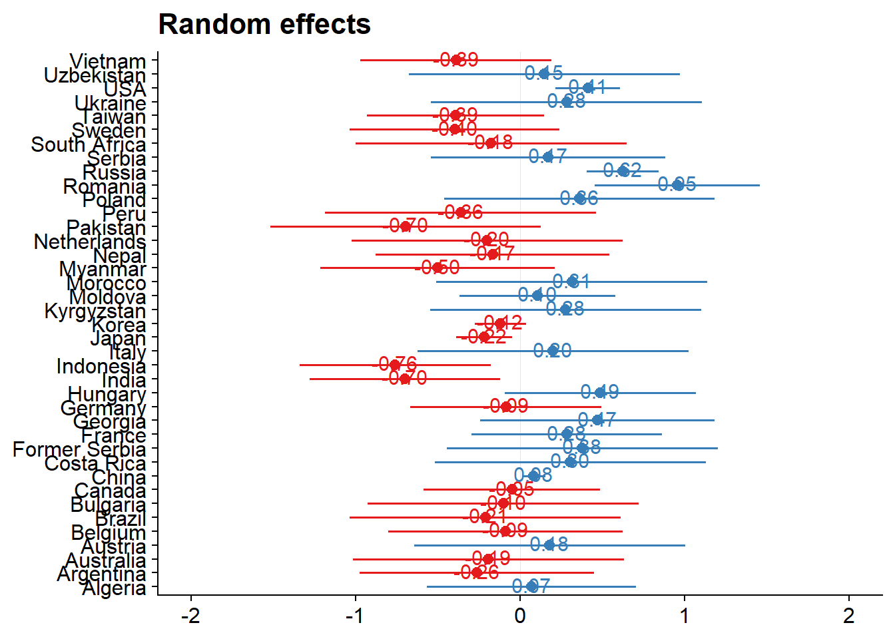
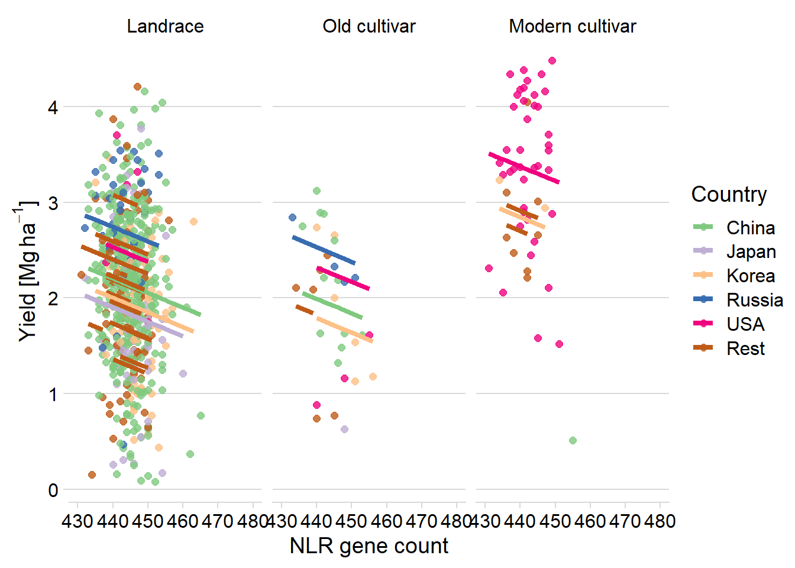

Linking yield with NLR PAV
Philipp Bayer
2020-09-22
Last updated: 2021-03-24
Checks: 7 0
Knit directory: R_gene_analysis/
This reproducible R Markdown analysis was created with workflowr (version 1.6.2.9000). The Checks tab describes the reproducibility checks that were applied when the results were created. The Past versions tab lists the development history.
Great! Since the R Markdown file has been committed to the Git repository, you know the exact version of the code that produced these results.
Great job! The global environment was empty. Objects defined in the global environment can affect the analysis in your R Markdown file in unknown ways. For reproduciblity it’s best to always run the code in an empty environment.
The command set.seed(20200917) was run prior to running the code in the R Markdown file. Setting a seed ensures that any results that rely on randomness, e.g. subsampling or permutations, are reproducible.
Great job! Recording the operating system, R version, and package versions is critical for reproducibility.
Nice! There were no cached chunks for this analysis, so you can be confident that you successfully produced the results during this run.
Great job! Using relative paths to the files within your workflowr project makes it easier to run your code on other machines.
Great! You are using Git for version control. Tracking code development and connecting the code version to the results is critical for reproducibility.
The results in this page were generated with repository version e747dc6. See the Past versions tab to see a history of the changes made to the R Markdown and HTML files.
Note that you need to be careful to ensure that all relevant files for the analysis have been committed to Git prior to generating the results (you can use wflow_publish or wflow_git_commit). workflowr only checks the R Markdown file, but you know if there are other scripts or data files that it depends on. Below is the status of the Git repository when the results were generated:
Ignored files:
Ignored: .Rhistory
Ignored: .Rproj.user/
Untracked files:
Untracked: data/Brec_R1.txt
Untracked: data/Brec_R2.txt
Untracked: data/CR15_R1.txt
Untracked: data/CR15_R2.txt
Untracked: data/CR_14_R1.txt
Untracked: data/CR_14_R2.txt
Untracked: data/KS_R1.txt
Untracked: data/KS_R2.txt
Untracked: data/NBS_PAV.txt.gz
Untracked: data/NLR_PAV_GD.txt
Untracked: data/NLR_PAV_GM.txt
Untracked: data/PAVs_newick.txt
Untracked: data/PPR1.txt
Untracked: data/PPR2.txt
Untracked: data/SNPs_newick.txt
Untracked: data/bac.txt
Untracked: data/brown.txt
Untracked: data/cy3.txt
Untracked: data/cy5.txt
Untracked: data/early.txt
Untracked: data/flowerings.txt
Untracked: data/foregeye.txt
Untracked: data/height.txt
Untracked: data/late.txt
Untracked: data/mature.txt
Untracked: data/motting.txt
Untracked: data/mvp.kin.bin
Untracked: data/mvp.kin.desc
Untracked: data/oil.txt
Untracked: data/pdh.txt
Untracked: data/protein.txt
Untracked: data/rust_tan.txt
Untracked: data/salt.txt
Untracked: data/seedq.txt
Untracked: data/seedweight.txt
Untracked: data/stem_termination.txt
Untracked: data/sudden.txt
Untracked: data/virus.txt
Note that any generated files, e.g. HTML, png, CSS, etc., are not included in this status report because it is ok for generated content to have uncommitted changes.
These are the previous versions of the repository in which changes were made to the R Markdown (analysis/yield_link.Rmd) and HTML (docs/yield_link.html) files. If you’ve configured a remote Git repository (see ?wflow_git_remote), click on the hyperlinks in the table below to view the files as they were in that past version.
| File | Version | Author | Date | Message |
|---|---|---|---|---|
| Rmd | e747dc6 | Philipp Bayer | 2021-03-24 | wflow_publish(files = c(“analysis/index.Rmd”, “analysis/yield_lm_link.Rmd”, |
| html | 8bcd145 | Philipp Bayer | 2021-03-09 | Build site. |
| Rmd | 3c54326 | Philipp Bayer | 2021-03-09 | wflow_publish(files = “analysis/yield_link.Rmd”) |
| Rmd | 2844fd3 | Philipp Bayer | 2021-02-09 | Add changes, add missing yield |
| html | 6f40d36 | Philipp Bayer | 2020-12-16 | Build site. |
| Rmd | a407cb3 | Philipp Bayer | 2020-12-16 | wflow_publish(“analysis/yield_link.Rmd”) |
| html | 3b4c387 | Philipp Bayer | 2020-12-16 | Build site. |
| Rmd | e8e89b1 | Philipp Bayer | 2020-12-16 | wflow_publish(“analysis/yield_link.Rmd”) |
| html | 0ccd24d | Philipp Bayer | 2020-12-16 | Build site. |
| Rmd | b1c1839 | Philipp Bayer | 2020-12-16 | wflow_publish(“analysis/yield_link.Rmd”) |
| html | 6df3f7b | Philipp Bayer | 2020-12-14 | Build site. |
| Rmd | b87834e | Philipp Bayer | 2020-12-14 | wflow_publish(“analysis/yield_link.Rmd”) |
| html | 25ba454 | Philipp Bayer | 2020-12-14 | Build site. |
| Rmd | c777575 | Philipp Bayer | 2020-12-14 | wflow_publish(“analysis/yield_link.Rmd”) |
| html | e519122 | Philipp Bayer | 2020-12-11 | Build site. |
| html | 364fc37 | Philipp Bayer | 2020-12-11 | Build site. |
| Rmd | 3935c51 | Philipp Bayer | 2020-12-11 | wflow_publish(c(“analysis/index.Rmd”, “analysis/yield_link.Rmd”)) |
| html | a33cd7c | Philipp Bayer | 2020-12-08 | Build site. |
| Rmd | 2eec51d | Philipp Bayer | 2020-12-08 | wflow_publish(“analysis/yield_link.Rmd”) |
| html | fa16e50 | Philipp Bayer | 2020-11-18 | Build site. |
| Rmd | 77b5633 | Philipp Bayer | 2020-11-18 | wflow_publish(“analysis/yield_link.Rmd”) |
| html | f0548a4 | Philipp Bayer | 2020-11-18 | Build site. |
| Rmd | 5b31dcc | Philipp Bayer | 2020-11-18 | wflow_publish(“analysis/yield_link.Rmd”) |
| html | 7fda2ed | Philipp Bayer | 2020-11-18 | Build site. |
| Rmd | 0e810db | Philipp Bayer | 2020-11-18 | More fixedp lots |
| html | 4ed2150 | Philipp Bayer | 2020-11-18 | Build site. |
| Rmd | f0de005 | Philipp Bayer | 2020-11-18 | PLots in one row now |
| html | e324223 | Philipp Bayer | 2020-11-18 | Build site. |
| Rmd | b8b60b1 | Philipp Bayer | 2020-11-18 | Add StrengeJacke plots |
| html | fb8bbfb | Philipp Bayer | 2020-11-18 | Build site. |
| Rmd | f0a5bdb | Philipp Bayer | 2020-11-18 | give me back my warnings |
| html | adbc058 | Philipp Bayer | 2020-11-18 | Build site. |
| Rmd | dc2aad4 | Philipp Bayer | 2020-11-18 | wflow_publish(“analysis/yield_link.Rmd”) |
| html | 359d849 | Philipp Bayer | 2020-11-18 | Build site. |
| Rmd | facd3e7 | Philipp Bayer | 2020-11-18 | wflow_publish(“analysis/yield_link.Rmd”) |
| html | e84338b | Philipp Bayer | 2020-11-18 | Build site. |
| Rmd | 2009819 | Philipp Bayer | 2020-11-18 | fixed lme4 syntax |
| html | 22a48ac | Philipp Bayer | 2020-11-18 | Build site. |
| Rmd | 92e2580 | Philipp Bayer | 2020-11-18 | fixed lme4 syntax |
| html | 262a76f | Philipp Bayer | 2020-11-05 | Build site. |
| Rmd | 69e9c29 | Philipp Bayer | 2020-11-05 | wflow_publish(“analysis/yield_link.Rmd”) |
| html | 5ddfe2b | Philipp Bayer | 2020-11-05 | Build site. |
| Rmd | 25f0f54 | Philipp Bayer | 2020-11-05 | wflow_publish(“analysis/yield_link.Rmd”) |
| html | fa5c0ff | Philipp Bayer | 2020-11-04 | Build site. |
| Rmd | 2d9c3db | Philipp Bayer | 2020-11-04 | wflow_publish(c(“analysis/index.Rmd”, “analysis/yield_link.Rmd”)) |
| html | f34dd48 | Philipp Bayer | 2020-11-02 | Build site. |
| Rmd | be2f299 | Philipp Bayer | 2020-11-02 | wflow_publish(“analysis/yield_link.Rmd”) |
| html | 58f8610 | Philipp Bayer | 2020-11-02 | Build site. |
| Rmd | 5166687 | Philipp Bayer | 2020-11-02 | wflow_publish(“analysis/yield_link.Rmd”) |
| Rmd | dae157b | Philipp Bayer | 2020-09-24 | Update of analysis |
| html | dae157b | Philipp Bayer | 2020-09-24 | Update of analysis |
knitr::opts_chunk$set(message = FALSE)
library(tidyverse)-- Attaching packages ------------------------------------------------------------------------------------------------------------------- tidyverse 1.3.0 --v ggplot2 3.3.2 v purrr 0.3.4
v tibble 3.0.2 v dplyr 1.0.0
v tidyr 1.1.0 v stringr 1.4.0
v readr 1.3.1 v forcats 0.5.0-- Conflicts ---------------------------------------------------------------------------------------------------------------------- tidyverse_conflicts() --
x dplyr::filter() masks stats::filter()
x dplyr::lag() masks stats::lag()library(patchwork)
library(sjPlot)Learn more about sjPlot with 'browseVignettes("sjPlot")'.library(ggsci)
library(dabestr)Loading required package: magrittr
Attaching package: 'magrittr'The following object is masked from 'package:purrr':
set_namesThe following object is masked from 'package:tidyr':
extractlibrary(dabestr)
library(cowplot)
********************************************************Note: As of version 1.0.0, cowplot does not change the default ggplot2 theme anymore. To recover the previous behavior, execute:
theme_set(theme_cowplot())********************************************************
Attaching package: 'cowplot'The following objects are masked from 'package:sjPlot':
plot_grid, save_plotThe following object is masked from 'package:patchwork':
align_plotslibrary(ggsignif)
library(ggforce)
library(lme4)Loading required package: Matrix
Attaching package: 'Matrix'The following objects are masked from 'package:tidyr':
expand, pack, unpacklibrary(directlabels)
library(lmerTest)
Attaching package: 'lmerTest'The following object is masked from 'package:lme4':
lmerThe following object is masked from 'package:stats':
steplibrary(dotwhisker)
library(pals)
theme_set(theme_cowplot())
library(RColorBrewer)
library(countrycode)Data loading
npg_col = pal_npg("nrc")(9)
col_list <- c(`Wild`=npg_col[8],
Landrace = npg_col[3],
`Old cultivar`=npg_col[2],
`Modern cultivar`=npg_col[4])
pav_table <- read_tsv('./data/soybean_pan_pav.matrix_gene.txt.gz')nbs <- read_tsv('./data/Lee.NBS.candidates.lst', col_names = c('Name', 'Class'))
nbs# A tibble: 486 x 2
Name Class
<chr> <chr>
1 UWASoyPan00953.t1 CN
2 GlymaLee.13G222900.1.p CN
3 GlymaLee.18G227000.1.p CN
4 GlymaLee.18G080600.1.p CN
5 GlymaLee.20G036200.1.p CN
6 UWASoyPan01876.t1 CN
7 UWASoyPan04211.t1 CN
8 GlymaLee.19G105400.1.p CN
9 GlymaLee.18G085100.1.p CN
10 GlymaLee.11G142600.1.p CN
# ... with 476 more rows# have to remove the .t1s
nbs$Name <- gsub('.t1','', nbs$Name)
nbs_pav_table <- pav_table %>% filter(Individual %in% nbs$Name)names <- c()
presences <- c()
for (i in seq_along(nbs_pav_table)){
if ( i == 1) next
thisind <- colnames(nbs_pav_table)[i]
pavs <- nbs_pav_table[[i]]
presents <- sum(pavs)
names <- c(names, thisind)
presences <- c(presences, presents)
}
nbs_res_tibb <- new_tibble(list(names = names, presences = presences))Warning: The `nrow` argument of `new_tibble()` can't be missing as of tibble 2.0.0.
`x` must be a scalar integer.
This warning is displayed once every 8 hours.
Call `lifecycle::last_warnings()` to see where this warning was generated.# let's make the same table for all genes too
names <- c()
presences <- c()
for (i in seq_along(pav_table)){
if ( i == 1) next
thisind <- colnames(pav_table)[i]
pavs <- pav_table[[i]]
presents <- sum(pavs)
names <- c(names, thisind)
presences <- c(presences, presents)
}
res_tibb <- new_tibble(list(names = names, presences = presences))groups <- read_csv('./data/Table_of_cultivar_groups.csv')
groups <- rename(groups, Group = `Group in violin table`)
groups <- groups %>%
mutate(Group = str_replace_all(Group, 'landrace', 'Landrace')) %>%
mutate(Group = str_replace_all(Group, 'Old_cultivar', 'Old cultivar')) %>%
mutate(Group = str_replace_all(Group, 'Modern_cultivar', 'Modern cultivar')) %>%
mutate(Group = str_replace_all(Group, 'Wild-type', 'Wild'))
groups$Group <-
factor(
groups$Group,
levels = c('Wild',
'Landrace',
'Old cultivar',
'Modern cultivar')
)
groups# A tibble: 1,069 x 3
`Data-storage-ID` `PI-ID` Group
<chr> <chr> <fct>
1 SRR1533284 PI416890 Landrace
2 SRR1533282 PI323576 Landrace
3 SRR1533292 PI157421 Landrace
4 SRR1533216 PI594615 Landrace
5 SRR1533239 PI603336 Landrace
6 USB-108 PI165675 Landrace
7 HNEX-13 PI253665D Landrace
8 USB-382 PI603549 Landrace
9 SRR1533236 PI587552 Landrace
10 SRR1533332 PI567293 Landrace
# ... with 1,059 more rowsnbs_joined_groups <-
inner_join(nbs_res_tibb, groups, by = c('names' = 'Data-storage-ID'))
all_joined_groups <-
inner_join(res_tibb, groups, by = c('names' = 'Data-storage-ID'))Linking with yield
Can we link the trajectory of NLR genes with the trajectory of yield across the history of soybean breeding? let’s make a simple regression for now
Yield
yield <- read_tsv('./data/yield.txt')
yield_join <- inner_join(nbs_res_tibb, yield, by=c('names'='Line'))yield_join %>% ggplot(aes(x=presences, y=Yield)) + geom_hex() + geom_smooth() +
xlab('NLR gene count')
Protein
protein <- read_tsv('./data/protein_phenotype.txt')
protein_join <- left_join(nbs_res_tibb, protein, by=c('names'='Line')) %>% filter(!is.na(Protein))protein_join %>% ggplot(aes(x=presences, y=Protein)) + geom_hex() + geom_smooth() +
xlab('NLR gene count')
summary(lm(Protein ~ presences, data = protein_join))
Call:
lm(formula = Protein ~ presences, data = protein_join)
Residuals:
Min 1Q Median 3Q Max
-11.8479 -2.1274 -0.3336 1.9959 10.0949
Coefficients:
Estimate Std. Error t value Pr(>|t|)
(Intercept) -7.98158 7.24125 -1.102 0.271
presences 0.11786 0.01624 7.258 8.07e-13 ***
---
Signif. codes: 0 '***' 0.001 '**' 0.01 '*' 0.05 '.' 0.1 ' ' 1
Residual standard error: 3.106 on 960 degrees of freedom
Multiple R-squared: 0.05203, Adjusted R-squared: 0.05104
F-statistic: 52.69 on 1 and 960 DF, p-value: 8.075e-13Seed weight
Let’s look at seed weight:
seed_weight <- read_tsv('./data/Seed_weight_Phenotype.txt', col_names = c('names', 'wt'))
seed_join <- left_join(nbs_res_tibb, seed_weight) %>% filter(!is.na(wt))seed_join %>% filter(wt > 5) %>% ggplot(aes(x=presences, y=wt)) + geom_hex() + geom_smooth() +
ylab('Seed weight') +
xlab('NLR gene count')
summary(lm(wt ~ presences, data = seed_join))
Call:
lm(formula = wt ~ presences, data = seed_join)
Residuals:
Min 1Q Median 3Q Max
-12.2910 -2.8692 0.1462 2.7771 19.6962
Coefficients:
Estimate Std. Error t value Pr(>|t|)
(Intercept) 91.40656 14.67990 6.227 8.28e-10 ***
presences -0.17636 0.03298 -5.348 1.21e-07 ***
---
Signif. codes: 0 '***' 0.001 '**' 0.01 '*' 0.05 '.' 0.1 ' ' 1
Residual standard error: 4.714 on 690 degrees of freedom
Multiple R-squared: 0.0398, Adjusted R-squared: 0.0384
F-statistic: 28.6 on 1 and 690 DF, p-value: 1.213e-07Oil content
And now let’s look at the oil phenotype:
oil <- read_tsv('./data/oil_phenotype.txt')
oil_join <- left_join(nbs_res_tibb, oil, by=c('names'='Line')) %>% filter(!is.na(Oil))
oil_join# A tibble: 962 x 3
names presences Oil
<chr> <dbl> <dbl>
1 AB-01 445 17.6
2 AB-02 454 16.8
3 BR-24 455 20.6
4 ESS 454 20.9
5 For 448 21
6 HN001 448 23.6
7 HN002 444 18.5
8 HN003 446 17.5
9 HN004 442 18.9
10 HN005 440 15.5
# ... with 952 more rowsoil_join %>% ggplot(aes(x=presences, y=Oil)) + geom_hex() + geom_smooth() +
xlab('NLR gene count')
summary(lm(Oil ~ presences, data = oil_join))
Call:
lm(formula = Oil ~ presences, data = oil_join)
Residuals:
Min 1Q Median 3Q Max
-10.4376 -1.9081 0.4846 2.2401 9.0361
Coefficients:
Estimate Std. Error t value Pr(>|t|)
(Intercept) 118.03941 7.31646 16.13 <2e-16 ***
presences -0.22591 0.01641 -13.77 <2e-16 ***
---
Signif. codes: 0 '***' 0.001 '**' 0.01 '*' 0.05 '.' 0.1 ' ' 1
Residual standard error: 3.139 on 960 degrees of freedom
Multiple R-squared: 0.1649, Adjusted R-squared: 0.1641
F-statistic: 189.6 on 1 and 960 DF, p-value: < 2.2e-16OK there are many, many outliers here. Clearly I’ll have to do something fancier - for example, using the first two PCs as covariates might get rid of some of those outliers.
Boxplots per group
Yield
nbs_joined_groups %>%
filter(!is.na(Group)) %>%
inner_join(yield, by=c('names'='Line')) %>%
ggplot(aes(x=Group, y=Yield, fill = Group)) +
geom_boxplot() +
scale_fill_manual(values = col_list) +
theme_minimal_hgrid() +
theme(axis.text.x = element_text(size=12),
axis.text.y = element_text(size=12)) +
geom_signif(comparisons = list(c('Old cultivar', 'Modern cultivar')),
map_signif_level = T) +
guides(fill=FALSE) +
ylab('Yield') +
xlab('Accession group')
And let’s check the dots:
nbs_joined_groups %>%
filter(!is.na(Group)) %>%
inner_join(yield_join, by = 'names') %>%
ggplot(aes(y=presences.x, x=Yield, color=Group)) +
geom_point() +
scale_color_manual(values = col_list) +
theme_minimal_hgrid() +
theme(axis.text.x = element_text(size=12),
axis.text.y = element_text(size=12)) +
ylab('NLR gene count')
nbs_joined_groups %>%
filter(!is.na(Group)) %>%
inner_join(yield_join, by = 'names') %>%
filter(Group != 'Landrace') %>%
ggplot(aes(x=presences.x, y=Yield, color=Group)) +
geom_point() +
scale_color_manual(values = col_list) +
theme_minimal_hgrid() +
geom_smooth() +
theme(axis.text.x = element_text(size=12),
axis.text.y = element_text(size=12)) +
xlab('NLR gene count') ## Protein
## Protein
protein vs. the four groups:
nbs_joined_groups %>%
filter(!is.na(Group)) %>%
inner_join(protein, by=c('names'='Line')) %>%
ggplot(aes(x=Group, y=Protein, fill = Group)) +
geom_boxplot() +
scale_fill_manual(values = col_list) +
theme_minimal_hgrid() +
theme(axis.text.x = element_text(size=12),
axis.text.y = element_text(size=12)) +
geom_signif(comparisons = list(c('Wild', 'Landrace'),
c('Old cultivar', 'Modern cultivar')),
map_signif_level = T) +
guides(fill=FALSE) +
ylab('Protein') +
xlab('Accession group')
Seed weight
And seed weight:
nbs_joined_groups %>%
filter(!is.na(Group)) %>%
inner_join(seed_join) %>%
ggplot(aes(x=Group, y=wt, fill = Group)) +
geom_boxplot() +
scale_fill_manual(values = col_list) +
theme_minimal_hgrid() +
theme(axis.text.x = element_text(size=12),
axis.text.y = element_text(size=12)) +
geom_signif(comparisons = list(c('Wild', 'Landrace'),
c('Old cultivar', 'Modern cultivar')),
map_signif_level = T) +
guides(fill=FALSE) +
ylab('Seed weight') +
xlab('Accession group')
Wow, that’s breeding!
Oil content
And finally, Oil content:
nbs_joined_groups %>%
filter(!is.na(Group)) %>%
inner_join(oil_join, by = 'names') %>%
ggplot(aes(x=Group, y=Oil, fill = Group)) +
geom_boxplot() +
scale_fill_manual(values = col_list) +
theme_minimal_hgrid() +
theme(axis.text.x = element_text(size=12),
axis.text.y = element_text(size=12)) +
geom_signif(comparisons = list(c('Wild', 'Landrace'),
c('Old cultivar', 'Modern cultivar')),
map_signif_level = T) +
guides(fill=FALSE) +
ylab('Oil content') +
xlab('Accession group')
Oha, a single star. That’s p < 0.05!
Let’s redo the above hexplot, but also color the dots by group.
nbs_joined_groups %>%
filter(!is.na(Group)) %>%
inner_join(oil_join, by = 'names') %>%
ggplot(aes(x=presences.x, y=Oil, color=Group)) +
geom_point() +
scale_color_manual(values = col_list) +
theme_minimal_hgrid() +
theme(axis.text.x = element_text(size=12),
axis.text.y = element_text(size=12)) +
xlab('NLR gene count')
Oha, so it’s the Wilds that drag this out a lot.
Let’s remove them and see what it looks like:
nbs_joined_groups %>%
filter(!is.na(Group)) %>%
inner_join(oil_join, by = 'names') %>%
filter(Group %in% c('Old cultivar', 'Modern cultivar')) %>%
ggplot(aes(x=presences.x, y=Oil, color=Group)) +
geom_point() +
scale_color_manual(values = col_list) +
theme_minimal_hgrid() +
theme(axis.text.x = element_text(size=12),
axis.text.y = element_text(size=12)) +
xlab('NLR gene count') +
geom_smooth()
Let’s remove that one outlier:
nbs_joined_groups %>%
filter(!is.na(Group)) %>%
inner_join(oil_join, by = 'names') %>%
filter(Group %in% c('Old cultivar', 'Modern cultivar')) %>%
filter(Oil > 13) %>%
ggplot(aes(x=presences.x, y=Oil, color=Group)) +
geom_point() +
scale_color_manual(values = col_list) +
theme_minimal_hgrid() +
theme(axis.text.x = element_text(size=12),
axis.text.y = element_text(size=12)) +
xlab('NLR gene count') +
geom_smooth()
Does the above oil content boxplot become different if we exclude the one outlier? I’d bet so
nbs_joined_groups %>%
filter(!is.na(Group)) %>%
inner_join(oil_join, by = 'names') %>%
filter(names != 'USB-393') %>%
ggplot(aes(x=Group, y=Oil, fill = Group)) +
geom_boxplot() +
scale_fill_manual(values = col_list) +
theme_minimal_hgrid() +
theme(axis.text.x = element_text(size=12),
axis.text.y = element_text(size=12)) +
geom_signif(comparisons = list(c('Wild', 'Landrace'),
c('Old cultivar', 'Modern cultivar')),
map_signif_level = T) +
guides(fill=FALSE) +
ylab('Oil content') +
xlab('Accession group')
Nope, still significantly higher in modern cultivars!
Mixed modeling
Alright here’s my hypothesis: There’s a link between cultivar status (Old, Wild, Landrace, Modern), r-gene count, and yield, but it’s ‘hidden’ by country differences.
Great tutorial here: https://ourcodingclub.github.io/tutorials/mixed-models
So we’ll have to build some lme4 models!
Normalising NLR gene counts
nbs_joined_groups$presences2 <- scale(nbs_joined_groups$presences, center=T, scale=T)
hist(nbs_joined_groups$presences2)
Oil
oil_nbs_joined_groups <- nbs_joined_groups %>% inner_join(oil_join, by = 'names')
oil_nbs_joined_groups$Oil2 <- scale(oil_nbs_joined_groups$Oil, center=T, scale=T)basic.lm <- lm(Oil2 ~ presences2, data=oil_nbs_joined_groups)ggplot(oil_nbs_joined_groups, aes(x = presences2, y = Oil2)) +
geom_point() +
geom_smooth(method = "lm")
Hm looks messy, you can see two groups
plot(basic.lm, which = 1)
which is confirmed by the messy line
plot(basic.lm, which = 2)
and this garbage qqplot.
So let’s build an lmer model!
mixed.lmer <- lmer(Oil2 ~ presences2 + (1|Group), data=oil_nbs_joined_groups)
summary(mixed.lmer)Linear mixed model fit by REML. t-tests use Satterthwaite's method [
lmerModLmerTest]
Formula: Oil2 ~ presences2 + (1 | Group)
Data: oil_nbs_joined_groups
REML criterion at convergence: 1872.4
Scaled residuals:
Min 1Q Median 3Q Max
-4.5879 -0.5672 0.0869 0.6631 3.2111
Random effects:
Groups Name Variance Std.Dev.
Group (Intercept) 1.3349 1.1554
Residual 0.4075 0.6384
Number of obs: 951, groups: Group, 4
Fixed effects:
Estimate Std. Error df t value Pr(>|t|)
(Intercept) -0.04360 0.57867 2.99844 -0.075 0.9447
presences2 -0.05350 0.02394 947.27006 -2.234 0.0257 *
---
Signif. codes: 0 '***' 0.001 '**' 0.01 '*' 0.05 '.' 0.1 ' ' 1
Correlation of Fixed Effects:
(Intr)
presences2 -0.004So the Variance for Group is 1.3349, that means it’s 1.3349/(1.3349+0.4075) *100 = 76% of the variance is explained by the four groups!
plot(mixed.lmer)
qqnorm(resid(mixed.lmer))
qqline(resid(mixed.lmer))
These still look fairly bad - better than before, but the QQ plot still isn’t on the line.
Let’s quickly check yield too
Yield
yield_nbs_joined_groups <- nbs_joined_groups %>% inner_join(yield_join, by = 'names')
yield_nbs_joined_groups$Yield2 <-scale(yield_nbs_joined_groups$Yield, center=T, scale=T)
yield_all_joined_groups <- all_joined_groups %>% inner_join(yield_join, by = 'names')mixed.lmer <- lmer(Yield2 ~ presences2 + (1|Group), data=yield_nbs_joined_groups)
summary(mixed.lmer)Linear mixed model fit by REML. t-tests use Satterthwaite's method [
lmerModLmerTest]
Formula: Yield2 ~ presences2 + (1 | Group)
Data: yield_nbs_joined_groups
REML criterion at convergence: 2060.4
Scaled residuals:
Min 1Q Median 3Q Max
-3.1643 -0.6819 0.0316 0.6948 2.8002
Random effects:
Groups Name Variance Std.Dev.
Group (Intercept) 0.6466 0.8041
Residual 0.8600 0.9274
Number of obs: 761, groups: Group, 3
Fixed effects:
Estimate Std. Error df t value Pr(>|t|)
(Intercept) 0.23641 0.46910 1.98335 0.504 0.664692
presences2 -0.15364 0.04172 757.46580 -3.683 0.000247 ***
---
Signif. codes: 0 '***' 0.001 '**' 0.01 '*' 0.05 '.' 0.1 ' ' 1
Correlation of Fixed Effects:
(Intr)
presences2 0.025 Percentage explained by breeding group: 0.6466 / (0.6466+0.8600)*100 = 42%
plot(mixed.lmer)
qqnorm(resid(mixed.lmer))
qqline(resid(mixed.lmer))
:O
p-value of 0.000247 for the normalised presences while accounting for the breeding group, that’s beautiful.
ggplot(yield_nbs_joined_groups, aes(x = presences2, y = Yield2)) +
facet_wrap(~Group, nrow=1) + # a panel for each mountain range
geom_point(alpha = 0.5) +
theme_classic() +
geom_line(data = cbind(yield_nbs_joined_groups, pred = predict(mixed.lmer)), aes(y = pred), size = 1) +
theme_minimal_hgrid() +
theme(legend.position = "none") +
xlab('Scaled and centered NLR gene count') +
ylab('Scaled and centered yield') +
scale_color_manual(values=as.vector(isol(40)))
Making the breeding group fixed
We have < 10 possible factors in the group, so making that fixed instead of random
# this doesn't work because you need at least one random effect
# mixed.lmer <- lmer(Yield2 ~ presences2 + Group, data=yield_nbs_joined_groups)Adding country
We should also add the country the plant is from as a random effect, that definitely has an influence too (perhaps a stronger one???)
Yield
country <- read_csv('./data/Cultivar_vs_country.csv')
names(country) <- c('names', 'PI-ID', 'Country')
yield_country_nbs_joined_groups <- yield_nbs_joined_groups %>% inner_join(country)
yield_country_all_joined_groups <- yield_all_joined_groups %>% inner_join(country)I need a summary table of sample sizes:
table(yield_country_nbs_joined_groups$Group)
Wild Landrace Old cultivar Modern cultivar
0 656 33 52 And a summary histogram:
yield_country_nbs_joined_groups %>% ggplot(aes(x=presences.x, fill=Group)) +
geom_histogram(bins=25) +
xlab(expression(paste('Yield [Mg ', ha^-1, ']'))) +
ylab('Count') +
facet_wrap(~Group) +
scale_fill_manual(values = col_list) +
theme(legend.position = "none")mixed.lmer <- lmer(Yield2 ~ presences2 + (1|Group) + (1|Country), data=yield_country_nbs_joined_groups)
summary(mixed.lmer)Linear mixed model fit by REML. t-tests use Satterthwaite's method [
lmerModLmerTest]
Formula: Yield2 ~ presences2 + (1 | Group) + (1 | Country)
Data: yield_country_nbs_joined_groups
REML criterion at convergence: 1957
Scaled residuals:
Min 1Q Median 3Q Max
-3.09429 -0.56737 0.03072 0.65680 2.89981
Random effects:
Groups Name Variance Std.Dev.
Country (Intercept) 0.3807 0.6170
Group (Intercept) 0.4178 0.6464
Residual 0.7614 0.8726
Number of obs: 741, groups: Country, 40; Group, 3
Fixed effects:
Estimate Std. Error df t value Pr(>|t|)
(Intercept) 0.07150 0.40194 2.28533 0.178 0.87336
presences2 -0.11258 0.04116 726.98206 -2.735 0.00639 **
---
Signif. codes: 0 '***' 0.001 '**' 0.01 '*' 0.05 '.' 0.1 ' ' 1
Correlation of Fixed Effects:
(Intr)
presences2 0.051 Nice! Yield is negatively correlated with the number of NLR genes when accounting for breeding group AND country
ggplot(yield_country_nbs_joined_groups, aes(x = presences2, y = Yield2, colour = Country)) +
facet_wrap(~Group, nrow=1) + # a panel for each mountain range
geom_point(alpha = 0.5) +
theme_classic() +
geom_line(data = cbind(yield_country_nbs_joined_groups, pred = predict(mixed.lmer)), aes(y = pred), size = 1) +
theme_minimal_hgrid() +
theme(legend.position = "none") +
xlab('Scaled and centered NLR gene count') +
ylab('Scaled and centered yield') +
scale_color_manual(values=as.vector(isol(40)))Some diagnostics:
plot(mixed.lmer)qqnorm(resid(mixed.lmer))
qqline(resid(mixed.lmer))Hm, the qqplot looks slightly worse than when I use maturity group alone, interesting!
BIG DISCLAIMER: Currently, I treat country and group not as nested variables, they’re independent. I think that is the way it should be in this case but I’m thinking.
Making the breeding group fixed
Since we have too few factors in the breeding groups we have to make that fixed, not random
mixed.lmer <- lmer(Yield2 ~ presences2 + Group + (1|Country), data=yield_country_nbs_joined_groups)
summary(mixed.lmer)Linear mixed model fit by REML. t-tests use Satterthwaite's method [
lmerModLmerTest]
Formula: Yield2 ~ presences2 + Group + (1 | Country)
Data: yield_country_nbs_joined_groups
REML criterion at convergence: 1951.8
Scaled residuals:
Min 1Q Median 3Q Max
-3.1864 -0.5700 0.0305 0.6525 2.8982
Random effects:
Groups Name Variance Std.Dev.
Country (Intercept) 0.3776 0.6145
Residual 0.7616 0.8727
Number of obs: 741, groups: Country, 40
Fixed effects:
Estimate Std. Error df t value Pr(>|t|)
(Intercept) -0.15265 0.13488 33.06645 -1.132 0.26588
presences2 -0.11149 0.04117 726.45969 -2.708 0.00693 **
GroupOld cultivar -0.29578 0.16164 734.95182 -1.830 0.06768 .
GroupModern cultivar 1.00458 0.22335 360.40725 4.498 9.28e-06 ***
---
Signif. codes: 0 '***' 0.001 '**' 0.01 '*' 0.05 '.' 0.1 ' ' 1
Correlation of Fixed Effects:
(Intr) prsnc2 GrpOlc
presences2 0.119
GrpOldcltvr -0.112 -0.008
GrpMdrncltv -0.194 0.065 0.156Non-normalised yield
Let’s see whether the ‘raw’ values perform the same.
mixed.lmer <- lmer(Yield ~ presences.x + (1|Group) + (1|Country), data=yield_country_nbs_joined_groups)
summary(mixed.lmer)Linear mixed model fit by REML. t-tests use Satterthwaite's method [
lmerModLmerTest]
Formula: Yield ~ presences.x + (1 | Group) + (1 | Country)
Data: yield_country_nbs_joined_groups
REML criterion at convergence: 1679.6
Scaled residuals:
Min 1Q Median 3Q Max
-3.09429 -0.56737 0.03072 0.65680 2.89981
Random effects:
Groups Name Variance Std.Dev.
Country (Intercept) 0.2602 0.5101
Group (Intercept) 0.2856 0.5345
Residual 0.5205 0.7215
Number of obs: 741, groups: Country, 40; Group, 3
Fixed effects:
Estimate Std. Error df t value Pr(>|t|)
(Intercept) 9.011013 2.481360 677.994843 3.631 0.000303 ***
presences.x -0.015192 0.005555 726.982171 -2.735 0.006389 **
---
Signif. codes: 0 '***' 0.001 '**' 0.01 '*' 0.05 '.' 0.1 ' ' 1
Correlation of Fixed Effects:
(Intr)
presences.x -0.991Oh, lower p-values for the intercept
ggplot(yield_country_nbs_joined_groups, aes(x = presences.x, y = Yield, colour = Country)) +
facet_wrap(~Group, nrow=1) + # a panel for each mountain range
geom_point(alpha = 0.5) +
theme_classic() +
geom_line(data = cbind(yield_country_nbs_joined_groups, pred = predict(mixed.lmer)), aes(y = pred), size = 1) +
theme_minimal_hgrid() +
theme(legend.position = "none") +
xlab('NLR gene count') +
xlab(expression(paste('Yield [Mg ', ha^-1, ']'))) +
scale_color_manual(values=as.vector(isol(40)))
plot(mixed.lmer)qqnorm(resid(mixed.lmer))
qqline(resid(mixed.lmer))
Making the breeding group fixed
mixed.lmer <- lmer(Yield ~ presences.x + Group + (1|Country), data=yield_country_nbs_joined_groups)
summary(mixed.lmer)Linear mixed model fit by REML. t-tests use Satterthwaite's method [
lmerModLmerTest]
Formula: Yield ~ presences.x + Group + (1 | Country)
Data: yield_country_nbs_joined_groups
REML criterion at convergence: 1675.1
Scaled residuals:
Min 1Q Median 3Q Max
-3.1864 -0.5700 0.0305 0.6525 2.8982
Random effects:
Groups Name Variance Std.Dev.
Country (Intercept) 0.2581 0.5081
Residual 0.5206 0.7216
Number of obs: 741, groups: Country, 40
Fixed effects:
Estimate Std. Error df t value Pr(>|t|)
(Intercept) 8.760056 2.465570 726.660933 3.553 0.000406 ***
presences.x -0.015045 0.005556 726.459065 -2.708 0.006929 **
GroupOld cultivar -0.244554 0.133648 734.951816 -1.830 0.067680 .
GroupModern cultivar 0.830604 0.184672 360.407255 4.498 9.28e-06 ***
---
Signif. codes: 0 '***' 0.001 '**' 0.01 '*' 0.05 '.' 0.1 ' ' 1
Correlation of Fixed Effects:
(Intr) prsnc. GrpOlc
presences.x -0.999
GrpOldcltvr 0.003 -0.008
GrpMdrncltv -0.074 0.065 0.156Oh, lower p-values for the intercept
ggplot(yield_country_nbs_joined_groups, aes(x = presences.x, y = Yield, colour = Country)) +
facet_wrap(~Group, nrow=1) + # a panel for each mountain range
geom_point(alpha = 0.5) +
theme_classic() +
geom_line(data = cbind(yield_country_nbs_joined_groups, pred = predict(mixed.lmer)), aes(y = pred), size = 1) +
theme_minimal_hgrid() +
theme(legend.position = "none") +
xlab('NLR gene count') +
xlab(expression(paste('Yield [Mg ', ha^-1, ']'))) +
scale_color_manual(values=as.vector(isol(40)))
plot(mixed.lmer)
qqnorm(resid(mixed.lmer))
qqline(resid(mixed.lmer))
plot(resid(mixed.lmer))
These are the final numbers for the paper.
Plotting effect of each covariate
(re.effects <- plot_model(mixed.lmer, type = "re", show.values = TRUE))
#lmerTest breaks these other packages so I better unload it and reload only lme4
detach("package:lmerTest", unload=TRUE)
yield_country_nbs_joined_groups_renamed <- yield_country_nbs_joined_groups
names(yield_country_nbs_joined_groups_renamed) <- c('names', 'presences.x', 'PI-ID', 'Group', 'presences2', 'presences.y', 'Yield', 'Yield2', 'Country')
mixed.lmer <- lmer(Yield2 ~ presences2 + Group + (1|Country), data=yield_country_nbs_joined_groups_renamed)
dwplot(mixed.lmer,
vline = geom_vline(xintercept = 0, colour = "grey60", linetype = 2))library(stargazer)
stargazer(mixed.lmer, type = "text",
digits = 3,
star.cutoffs = c(0.05, 0.01, 0.001),
digit.separator = "")
==================================================
Dependent variable:
-----------------------------
Yield2
--------------------------------------------------
presences2 -0.111**
(0.041)
GroupOld cultivar -0.296
(0.162)
GroupModern cultivar 1.005***
(0.223)
Constant -0.153
(0.135)
--------------------------------------------------
Observations 741
Log Likelihood -975.906
Akaike Inf. Crit. 1963.812
Bayesian Inf. Crit. 1991.460
==================================================
Note: *p<0.05; **p<0.01; ***p<0.001library(ggeffects)
ggpredict(mixed.lmer, terms = c("presences2", 'Group'), type = "re") %>%
plot() +
theme_minimal()Let’s also plot that for non-normalised data
mixed.lmer <- lmer(Yield ~ presences.x + Group + (1|Country), data=yield_country_nbs_joined_groups_renamed)
ggpredict(mixed.lmer, terms = c("presences.x", 'Group'), type = "re") %>%
plot() +
theme_minimal_hgrid() +
xlab('NLR count') +
ylab(expression(paste('Yield [Mg ', ha^-1, ']')))
# alright back to regular programming
library(lmerTest)More complex models
If I add random slopes to either groups not much changes, I do get warnings indicating that there’s not much in the data:
mixed.lmer <- lmer(Yield2 ~ presences2 + (presences2|Group) + (1|Country), data=yield_country_nbs_joined_groups)
summary(mixed.lmer)Linear mixed model fit by REML. t-tests use Satterthwaite's method [
lmerModLmerTest]
Formula: Yield2 ~ presences2 + (presences2 | Group) + (1 | Country)
Data: yield_country_nbs_joined_groups
REML criterion at convergence: 1954.8
Scaled residuals:
Min 1Q Median 3Q Max
-3.09789 -0.56422 0.04471 0.67067 2.88976
Random effects:
Groups Name Variance Std.Dev. Corr
Country (Intercept) 0.3920 0.6261
Group (Intercept) 0.3858 0.6211
presences2 0.0310 0.1761 0.30
Residual 0.7564 0.8697
Number of obs: 741, groups: Country, 40; Group, 3
Fixed effects:
Estimate Std. Error df t value Pr(>|t|)
(Intercept) 0.02964 0.38964 2.29148 0.076 0.945
presences2 -0.22515 0.12370 1.66243 -1.820 0.235
Correlation of Fixed Effects:
(Intr)
presences2 0.269 mixed.lmer <- lmer(Yield2 ~ presences2 + Group + (1 + presences2|Country), data=yield_country_nbs_joined_groups)
summary(mixed.lmer)Linear mixed model fit by REML. t-tests use Satterthwaite's method [
lmerModLmerTest]
Formula: Yield2 ~ presences2 + Group + (1 + presences2 | Country)
Data: yield_country_nbs_joined_groups
REML criterion at convergence: 1951.5
Scaled residuals:
Min 1Q Median 3Q Max
-3.1904 -0.5715 0.0314 0.6551 2.9003
Random effects:
Groups Name Variance Std.Dev. Corr
Country (Intercept) 0.397511 0.63048
presences2 0.002137 0.04623 1.00
Residual 0.761491 0.87263
Number of obs: 741, groups: Country, 40
Fixed effects:
Estimate Std. Error df t value Pr(>|t|)
(Intercept) -0.1470 0.1387 28.1820 -1.060 0.2982
presences2 -0.1162 0.0430 30.8335 -2.702 0.0111 *
GroupOld cultivar -0.3010 0.1615 733.1173 -1.863 0.0628 .
GroupModern cultivar 1.0093 0.2192 166.8461 4.605 8.15e-06 ***
---
Signif. codes: 0 '***' 0.001 '**' 0.01 '*' 0.05 '.' 0.1 ' ' 1
Correlation of Fixed Effects:
(Intr) prsnc2 GrpOlc
presences2 0.334
GrpOldcltvr -0.109 -0.017
GrpMdrncltv -0.188 0.044 0.158
convergence code: 0
boundary (singular) fit: see ?isSingularOh, a significant p-value, let’s plot plot that and compare with he previous plot:
ggplot(yield_country_nbs_joined_groups, aes(x = presences2, y = Yield2, colour = Country)) +
facet_wrap(~Group, nrow=1) + # a panel for each mountain range
geom_point(alpha = 0.5) +
theme_classic() +
geom_line(data = cbind(yield_country_nbs_joined_groups, pred = predict(mixed.lmer)), aes(y = pred), size = 1) +
theme_minimal_hgrid() +
theme(legend.position = "none") +
xlab('Scaled and centered NLR gene count') +
ylab('Scaled and centered yield') +
scale_color_manual(values=as.vector(isol(40)))Quite similar, mostly downwards trajectories for each country.
Let’s do that non-normalised:
mixed.lmer <- lmer(Yield ~ presences.x + Group + (1 + presences.x|Country), data=yield_country_nbs_joined_groups)Warning in checkConv(attr(opt, "derivs"), opt$par, ctrl = control$checkConv, :
unable to evaluate scaled gradientWarning in checkConv(attr(opt, "derivs"), opt$par, ctrl = control$checkConv, :
Model failed to converge: degenerate Hessian with 2 negative eigenvaluesWarning: Model failed to converge with 1 negative eigenvalue: -9.3e+04summary(mixed.lmer)Linear mixed model fit by REML. t-tests use Satterthwaite's method [
lmerModLmerTest]
Formula: Yield ~ presences.x + Group + (1 + presences.x | Country)
Data: yield_country_nbs_joined_groups
REML criterion at convergence: 1675.2
Scaled residuals:
Min 1Q Median 3Q Max
-3.1863 -0.5679 0.0294 0.6532 2.8982
Random effects:
Groups Name Variance Std.Dev. Corr
Country (Intercept) 5.191e-01 0.7204930
presences.x 2.402e-07 0.0004901 -0.98
Residual 5.206e-01 0.7215284
Number of obs: 741, groups: Country, 40
Fixed effects:
Estimate Std. Error df t value Pr(>|t|)
(Intercept) 8.73673 2.46492 709.51652 3.544 0.000419 ***
presences.x -0.01499 0.00555 412.58876 -2.702 0.007186 **
GroupOld cultivar -0.24420 0.13365 733.16976 -1.827 0.068096 .
GroupModern cultivar 0.83046 0.18493 218.59478 4.491 1.15e-05 ***
---
Signif. codes: 0 '***' 0.001 '**' 0.01 '*' 0.05 '.' 0.1 ' ' 1
Correlation of Fixed Effects:
(Intr) prsnc. GrpOlc
presences.x -0.999
GrpOldcltvr 0.002 -0.007
GrpMdrncltv -0.076 0.067 0.156
convergence code: 0
unable to evaluate scaled gradient
Model failed to converge: degenerate Hessian with 2 negative eigenvaluesggplot(yield_country_nbs_joined_groups, aes(x = presences.x, y = Yield, colour = Country)) +
facet_wrap(~Group, nrow=1) + # a panel for each mountain range
geom_point(alpha = 0.5) +
theme_classic() +
geom_line(data = cbind(yield_country_nbs_joined_groups, pred = predict(mixed.lmer)), aes(y = pred), size = 1) +
theme_minimal_hgrid() +
theme(legend.position = "none") +
xlab('NLR gene count') +
ylab(expression(paste('Yield [Mg ', ha^-1, ']'))) +
scale_color_manual(values=as.vector(isol(40))) Quite similar, mostly downwards trajectories for each country.
Quite similar, mostly downwards trajectories for each country.
And now both random slopes:
mixed.lmer <- lmer(Yield2 ~ presences2 + (presences2|Group) + (1 + presences2|Country), data=yield_country_nbs_joined_groups)
summary(mixed.lmer)Linear mixed model fit by REML. t-tests use Satterthwaite's method [
lmerModLmerTest]
Formula: Yield2 ~ presences2 + (presences2 | Group) + (1 + presences2 |
Country)
Data: yield_country_nbs_joined_groups
REML criterion at convergence: 1953.7
Scaled residuals:
Min 1Q Median 3Q Max
-3.11214 -0.56909 0.04459 0.66469 2.91084
Random effects:
Groups Name Variance Std.Dev. Corr
Country (Intercept) 0.42704 0.6535
presences2 0.01045 0.1022 0.81
Group (Intercept) 0.37523 0.6126
presences2 0.04201 0.2050 0.18
Residual 0.75392 0.8683
Number of obs: 741, groups: Country, 40; Group, 3
Fixed effects:
Estimate Std. Error df t value Pr(>|t|)
(Intercept) 0.03595 0.38772 2.35869 0.093 0.933
presences2 -0.23848 0.14300 1.96304 -1.668 0.240
Correlation of Fixed Effects:
(Intr)
presences2 0.231 ggplot(yield_country_nbs_joined_groups, aes(x = presences2, y = Yield2, colour = Country)) +
facet_wrap(~Group, nrow=1) + # a panel for each mountain range
geom_point(alpha = 0.5) +
theme_classic() +
geom_line(data = cbind(yield_country_nbs_joined_groups, pred = predict(mixed.lmer)), aes(y = pred), size = 1) +
theme_minimal_hgrid() +
theme(legend.position = "none") +
xlab('Scaled and centered NLR gene count') +
ylab('Scaled and centered yield') +
scale_color_manual(values=as.vector(isol(40))) Yeah, nah
Yeah, nah
Oil
I’m removing the wilds from the other phenotypes to make the models comparable with the yield model - the yield model uses Landrace as baseline, if I keep Wild in then the baseline is different!
oil_country_nbs_joined_groups <- oil_nbs_joined_groups %>% inner_join(country)
oil_country_nbs_joined_groups <- oil_country_nbs_joined_groups %>% filter(Group != 'Wild')
mixed.lmer <- lmer(Oil ~ presences.x + Group + (1|Country), data=oil_country_nbs_joined_groups)
summary(mixed.lmer)Linear mixed model fit by REML. t-tests use Satterthwaite's method [
lmerModLmerTest]
Formula: Oil ~ presences.x + Group + (1 | Country)
Data: oil_country_nbs_joined_groups
REML criterion at convergence: 3543.5
Scaled residuals:
Min 1Q Median 3Q Max
-4.4112 -0.5544 0.1126 0.6528 3.0813
Random effects:
Groups Name Variance Std.Dev.
Country (Intercept) 0.7957 0.892
Residual 5.0326 2.243
Number of obs: 789, groups: Country, 41
Fixed effects:
Estimate Std. Error df t value Pr(>|t|)
(Intercept) 30.65976 7.34188 782.49728 4.176 3.3e-05 ***
presences.x -0.02802 0.01654 783.56323 -1.694 0.090583 .
GroupOld cultivar 1.12205 0.36849 784.98582 3.045 0.002404 **
GroupModern cultivar 1.71759 0.48119 99.35821 3.569 0.000553 ***
---
Signif. codes: 0 '***' 0.001 '**' 0.01 '*' 0.05 '.' 0.1 ' ' 1
Correlation of Fixed Effects:
(Intr) prsnc. GrpOlc
presences.x -0.999
GrpOldcltvr -0.002 -0.003
GrpMdrncltv -0.075 0.066 0.153No significance here.
tab_model(mixed.lmer, p.val='kr')| Oil | |||
|---|---|---|---|
| Predictors | Estimates | CI | p |
| (Intercept) | 30.66 | 16.22 – 45.10 | <0.001 |
| presences.x | -0.03 | -0.06 – 0.00 | 0.091 |
| Group [Old cultivar] | 1.12 | 0.40 – 1.85 | 0.002 |
| Group [Modern cultivar] | 1.72 | 0.73 – 2.70 | 0.001 |
| Random Effects | |||
| σ2 | 5.03 | ||
| τ00 Country | 0.80 | ||
| ICC | 0.14 | ||
| N Country | 41 | ||
| Observations | 789 | ||
| Marginal R2 / Conditional R2 | 0.053 / 0.182 | ||
oilmod <- mixed.lmertable(oil_country_nbs_joined_groups$Group)
Wild Landrace Old cultivar Modern cultivar
0 677 41 71 Protein
protein_nbs_joined_groups <- nbs_joined_groups %>% inner_join(protein_join, by = 'names')
#protein_nbs_joined_groups$Protein2 <- scale(protein_nbs_joined_groups$Protein, center=T, scale=T)
protein_country_nbs_joined_groups <- protein_nbs_joined_groups %>% inner_join(country)
#protein_country_nbs_joined_groups <- rename(protein_country_nbs_joined_groups, Group=`Group in violin table`)
protein_country_nbs_joined_groups <- protein_country_nbs_joined_groups %>% filter(Group != 'Wild')
mixed.lmer <- lmer(Protein ~ presences.x + Group + (1|Country), data=protein_country_nbs_joined_groups)
summary(mixed.lmer)Linear mixed model fit by REML. t-tests use Satterthwaite's method [
lmerModLmerTest]
Formula: Protein ~ presences.x + Group + (1 | Country)
Data: protein_country_nbs_joined_groups
REML criterion at convergence: 3867.8
Scaled residuals:
Min 1Q Median 3Q Max
-2.7191 -0.6983 -0.0562 0.5934 3.5741
Random effects:
Groups Name Variance Std.Dev.
Country (Intercept) 0.6582 0.8113
Residual 7.6769 2.7707
Number of obs: 789, groups: Country, 41
Fixed effects:
Estimate Std. Error df t value Pr(>|t|)
(Intercept) 34.21818 9.03231 784.99934 3.788 0.000163 ***
presences.x 0.02180 0.02033 784.80098 1.072 0.283955
GroupOld cultivar -1.54464 0.45281 784.14871 -3.411 0.000680 ***
GroupModern cultivar -1.06476 0.55283 74.32151 -1.926 0.057927 .
---
Signif. codes: 0 '***' 0.001 '**' 0.01 '*' 0.05 '.' 0.1 ' ' 1
Correlation of Fixed Effects:
(Intr) prsnc. GrpOlc
presences.x -1.000
GrpOldcltvr -0.003 -0.001
GrpMdrncltv -0.083 0.075 0.141No significance here.
tab_model(mixed.lmer, p.val='kr')| Protein | |||
|---|---|---|---|
| Predictors | Estimates | CI | p |
| (Intercept) | 34.22 | 16.44 – 52.00 | <0.001 |
| presences.x | 0.02 | -0.02 – 0.06 | 0.285 |
| Group [Old cultivar] | -1.54 | -2.44 – -0.65 | 0.001 |
| Group [Modern cultivar] | -1.06 | -2.22 – 0.09 | 0.071 |
| Random Effects | |||
| σ2 | 7.68 | ||
| τ00 Country | 0.66 | ||
| ICC | 0.08 | ||
| N Country | 41 | ||
| Observations | 789 | ||
| Marginal R2 / Conditional R2 | 0.025 / 0.102 | ||
protmod <- mixed.lmertable(protein_country_nbs_joined_groups$Group)
Wild Landrace Old cultivar Modern cultivar
0 677 41 71 Seed weight
seed_nbs_joined_groups <- nbs_joined_groups %>% inner_join(seed_join, by = 'names')
#seed_nbs_joined_groups$wt2 <- scale(seed_nbs_joined_groups$wt, center=T, scale=T)
seed_country_nbs_joined_groups <- seed_nbs_joined_groups %>% inner_join(country)
#seed_country_nbs_joined_groups <- rename(seed_country_nbs_joined_groups, Group = `Group in violin table`)
seed_country_nbs_joined_groups <- seed_country_nbs_joined_groups %>% filter(Group != 'Wild')
mixed.lmer <- lmer(wt ~ presences.x + Group + (1|Country), data=seed_country_nbs_joined_groups)
summary(mixed.lmer)Linear mixed model fit by REML. t-tests use Satterthwaite's method [
lmerModLmerTest]
Formula: wt ~ presences.x + Group + (1 | Country)
Data: seed_country_nbs_joined_groups
REML criterion at convergence: 3608.8
Scaled residuals:
Min 1Q Median 3Q Max
-2.8823 -0.6388 0.0149 0.6015 4.6946
Random effects:
Groups Name Variance Std.Dev.
Country (Intercept) 1.353 1.163
Residual 17.156 4.142
Number of obs: 633, groups: Country, 38
Fixed effects:
Estimate Std. Error df t value Pr(>|t|)
(Intercept) 15.329943 15.266389 627.894885 1.004 0.3157
presences.x -0.004727 0.034360 624.361120 -0.138 0.8906
GroupOld cultivar 1.554124 0.778695 579.732427 1.996 0.0464 *
GroupModern cultivar 1.754191 0.925435 6.832254 1.896 0.1009
---
Signif. codes: 0 '***' 0.001 '**' 0.01 '*' 0.05 '.' 0.1 ' ' 1
Correlation of Fixed Effects:
(Intr) prsnc. GrpOlc
presences.x -1.000
GrpOldcltvr -0.013 0.009
GrpMdrncltv -0.104 0.096 0.137Again, no significance here.
tab_model(mixed.lmer, p.val='kr')| wt | |||
|---|---|---|---|
| Predictors | Estimates | CI | p |
| (Intercept) | 15.33 | -14.75 – 45.41 | 0.317 |
| presences.x | -0.00 | -0.07 – 0.06 | 0.891 |
| Group [Old cultivar] | 1.55 | 0.02 – 3.09 | 0.047 |
| Group [Modern cultivar] | 1.75 | -0.23 – 3.74 | 0.082 |
| Random Effects | |||
| σ2 | 17.16 | ||
| τ00 Country | 1.35 | ||
| ICC | 0.07 | ||
| N Country | 38 | ||
| Observations | 633 | ||
| Marginal R2 / Conditional R2 | 0.018 / 0.090 | ||
seedmod <- mixed.lmertable(seed_country_nbs_joined_groups$Group)
Wild Landrace Old cultivar Modern cultivar
0 548 31 54 The final yield model
This is the final yield model for the paper
mixed.lmer <- lmer(Yield ~ presences.x + Group + (1|Country), data=yield_country_nbs_joined_groups)
summary(mixed.lmer)Linear mixed model fit by REML. t-tests use Satterthwaite's method [
lmerModLmerTest]
Formula: Yield ~ presences.x + Group + (1 | Country)
Data: yield_country_nbs_joined_groups
REML criterion at convergence: 1675.1
Scaled residuals:
Min 1Q Median 3Q Max
-3.1864 -0.5700 0.0305 0.6525 2.8982
Random effects:
Groups Name Variance Std.Dev.
Country (Intercept) 0.2581 0.5081
Residual 0.5206 0.7216
Number of obs: 741, groups: Country, 40
Fixed effects:
Estimate Std. Error df t value Pr(>|t|)
(Intercept) 8.760056 2.465570 726.660933 3.553 0.000406 ***
presences.x -0.015045 0.005556 726.459065 -2.708 0.006929 **
GroupOld cultivar -0.244554 0.133648 734.951816 -1.830 0.067680 .
GroupModern cultivar 0.830604 0.184672 360.407255 4.498 9.28e-06 ***
---
Signif. codes: 0 '***' 0.001 '**' 0.01 '*' 0.05 '.' 0.1 ' ' 1
Correlation of Fixed Effects:
(Intr) prsnc. GrpOlc
presences.x -0.999
GrpOldcltvr 0.003 -0.008
GrpMdrncltv -0.074 0.065 0.156ggplot(yield_country_nbs_joined_groups, aes(x = presences.x, y = Yield, colour = Country)) +
facet_wrap(~Group, nrow=1) + # a panel for each mountain range
geom_point(alpha = 0.5) +
geom_line(data = cbind(yield_country_nbs_joined_groups, pred = predict(mixed.lmer)), aes(y = pred), size = 1) +
theme_minimal_hgrid() +
theme(legend.position = "none") +
xlab('NLR gene count') +
ylab(expression(paste('Yield [Mg ', ha^-1, ']'))) +
scale_color_manual(values=as.vector(isol(40)))
newdat <-cbind(yield_country_nbs_joined_groups, pred = predict(mixed.lmer))
newdat %>% mutate(Country2 = case_when ( Country == 'USA' ~ 'USA',
Country == 'China' ~ 'China',
Country == 'Korea' ~ 'Korea',
Country == 'Japan' ~ 'Japan',
Country == 'Russia' ~ 'Russia',
TRUE ~ '')) %>%
ggplot(aes(x = presences.x, y = pred, colour = Country)) +
facet_wrap(~Group, nrow=1) + # a panel for each mountain range
geom_line( size = 1) +
theme_minimal_hgrid() +
theme(legend.position = "none") +
xlab('NLR gene count') +
ylab(expression(paste('Yield [Mg ', ha^-1, ']'))) +
scale_color_manual(values=as.vector(isol(40)))+
geom_point(aes(y = Yield),alpha = 0.5) +
geom_dl(aes(label = Country2), method='last.bumpup') +
xlim(c(430, 480))
Let’s just use 6 groups - 5 main countries plus the rest
#remove that ugly yellow
mycol <- c(brewer.pal(n = 8, name = "Accent")[1:3], brewer.pal(n = 8, name = "Accent")[5:8])newdat %>% mutate(Country2 = case_when ( Country == 'USA' ~ 'USA',
Country == 'China' ~ 'China',
Country == 'Korea' ~ 'Korea',
Country == 'Japan' ~ 'Japan',
Country == 'Russia' ~ 'Russia',
TRUE ~ 'Rest')) %>%
mutate(Country2 = factor(Country2, levels=c('China', 'Japan', 'Korea', 'Russia', 'USA', 'Rest'))) %>%
ggplot(aes(x = presences.x, y = pred, color = Country2)) +
facet_wrap(~Group, nrow=1) + # a panel for each mountain range
geom_point(aes(y = Yield, color=Country2),alpha = 0.8, size=2) +
geom_line(aes(y=pred, group=Country, color=Country2), size = 1.5) +
theme_minimal_hgrid() +
xlab('NLR gene count') +
ylab(expression(paste('Yield [Mg ', ha^-1, ']'))) +
scale_color_manual(values=mycol) +
xlim(c(430, 480)) +
labs(color = "Country")
Let’s try another color scheme
# I want only every second, stronger color of the Paired scheme
mycol <- brewer.pal(n = 12, name = "Paired")[seq(2, 12, 2)]newdat %>% mutate(Country2 = case_when ( Country == 'USA' ~ 'USA',
Country == 'China' ~ 'China',
Country == 'Korea' ~ 'Korea',
Country == 'Japan' ~ 'Japan',
Country == 'Russia' ~ 'Russia',
TRUE ~ 'Rest')) %>%
mutate(Country2 = factor(Country2, levels=c('China', 'Japan', 'Korea', 'Russia', 'USA', 'Rest'))) %>%
ggplot(aes(x = presences.x, y = pred, color = Country2)) +
facet_wrap(~Group, nrow=1) + # a panel for each mountain range
geom_point(aes(y = Yield, color=Country2),alpha = 0.8, size=2) +
geom_line(aes(y=pred, group=Country, color=Country2), size = 1.5) +
theme_minimal_hgrid() +
xlab('NLR gene count') +
ylab(expression(paste('Yield [Mg ', ha^-1, ']'))) +
scale_color_manual(values=mycol) +
xlim(c(430, 480)) +
labs(color = "Country") +
theme(panel.spacing = unit(0.9, "lines"),
axis.text.x = element_text(size=10))OK that’s much better, nice and strong colors.
plot(mixed.lmer)
qqnorm(resid(mixed.lmer))
qqline(resid(mixed.lmer))plot(resid(mixed.lmer))
detach("package:lmerTest", unload=TRUE)
yield_country_nbs_joined_groups_renamed <- yield_country_nbs_joined_groups
names(yield_country_nbs_joined_groups_renamed) <- c('names', 'Count', 'PI-ID', 'Group', 'presences2.x', 'presences.y', 'Yield', 'Yield2.x', 'Country')
mixed.lmer <- lmer(Yield ~ `Count` + Group + (1|Country), data=yield_country_nbs_joined_groups_renamed)
yield_country_nbs_joined_groups_renamed# A tibble: 741 x 9
names Count `PI-ID` Group presences2.x[,1] presences.y Yield Yield2.x[,1]
<chr> <dbl> <chr> <fct> <dbl> <dbl> <dbl> <dbl>
1 AB-01 445 PI4580~ Land~ -0.119 445 1.54 -0.774
2 AB-02 454 PI6037~ Land~ 1.35 454 1.3 -1.06
3 For 448 PI5486~ Mode~ 0.371 448 3.34 1.40
4 HN001 448 PI5186~ Mode~ 0.371 448 3.54 1.64
5 HN005 440 PI4041~ Land~ -0.935 440 2.15 -0.0366
6 HN006 448 PI4077~ Land~ 0.371 448 2.06 -0.145
7 HN007 442 PI4242~ Land~ -0.609 442 1.64 -0.653
8 HN008 439 PI4376~ Land~ -1.10 439 2.51 0.399
9 HN009 445 PI4950~ Land~ -0.119 445 1.85 -0.399
10 HN010 447 PI4689~ Land~ 0.207 447 2.8 0.749
# ... with 731 more rows, and 1 more variable: Country <chr>dwplot(mixed.lmer,
vline = geom_vline(xintercept = 0, colour = "grey60", linetype = 2))
library(stargazer)
stargazer(mixed.lmer, type = "text",
digits = 3,
star.cutoffs = c(0.05, 0.01, 0.001),
digit.separator = "")
==================================================
Dependent variable:
-----------------------------
Yield
--------------------------------------------------
Count -0.015**
(0.006)
GroupOld cultivar -0.245
(0.134)
GroupModern cultivar 0.831***
(0.185)
Constant 8.760***
(2.466)
--------------------------------------------------
Observations 741
Log Likelihood -837.565
Akaike Inf. Crit. 1687.131
Bayesian Inf. Crit. 1714.779
==================================================
Note: *p<0.05; **p<0.01; ***p<0.001library(ggeffects)
ggpredict(mixed.lmer, terms = c("Count", 'Group'), type = "re") %>%
plot() +
theme_minimal_hgrid() +
xlab('NLR count') +
theme(plot.title=element_blank())plot_model(mixed.lmer, type = "re", sort.est = TRUE) + theme(plot.title=element_blank())plot_model(mixed.lmer, data=yield_country_nbs_joined_groups_renamed) +
theme_minimal_hgrid() +
theme(plot.title=element_blank())
plot_model(mixed.lmer, type = "pred", terms = c("Count", "Group")) +
theme_minimal_hgrid() +
xlab('NLR count') +
ylab((expression(paste('Yield [Mg ', ha^-1, ']')))) +
theme(plot.title=element_blank())
tab_model(mixed.lmer, p.val='kr', digits=3)| Yield | |||
|---|---|---|---|
| Predictors | Estimates | CI | p |
| (Intercept) | 8.760 | 3.915 – 13.606 | <0.001 |
| Count | -0.015 | -0.026 – -0.004 | 0.007 |
| Group [Old cultivar] | -0.245 | -0.507 – 0.018 | 0.068 |
| Group [Modern cultivar] | 0.831 | 0.463 – 1.199 | <0.001 |
| Random Effects | |||
| σ2 | 0.52 | ||
| τ00 Country | 0.26 | ||
| ICC | 0.33 | ||
| N Country | 40 | ||
| Observations | 741 | ||
| Marginal R2 / Conditional R2 | 0.070 / 0.378 | ||
σ measures the random effect variance I think, 0.52 is pretty good (this can easily be >1), but more useful to compare models with each other which I don’t do here.
intraclass-correlation coefficient (ICC) measures how the proportion of variance explained by the grouping structure, in this case, country
Let’s compare all models in one table:
tab_model(mixed.lmer, oilmod, protmod, seedmod, digits=3 )| Yield | Oil | Protein | wt | |||||||||
|---|---|---|---|---|---|---|---|---|---|---|---|---|
| Predictors | Estimates | CI | p | Estimates | CI | p | Estimates | CI | p | Estimates | CI | p |
| (Intercept) | 8.760 | 3.928 – 13.592 | <0.001 | 30.660 | 16.270 – 45.050 | <0.001 | 34.218 | 16.515 – 51.921 | <0.001 | 15.330 | -14.592 – 45.252 | 0.315 |
| Count | -0.015 | -0.026 – -0.004 | 0.007 | |||||||||
| Group [Old cultivar] | -0.245 | -0.507 – 0.017 | 0.067 | 1.122 | 0.400 – 1.844 | 0.002 | -1.545 | -2.432 – -0.657 | 0.001 | 1.554 | 0.028 – 3.080 | 0.046 |
| Group [Modern cultivar] | 0.831 | 0.469 – 1.193 | <0.001 | 1.718 | 0.774 – 2.661 | <0.001 | -1.065 | -2.148 – 0.019 | 0.054 | 1.754 | -0.060 – 3.568 | 0.058 |
| presences.x | -0.028 | -0.060 – 0.004 | 0.090 | 0.022 | -0.018 – 0.062 | 0.284 | -0.005 | -0.072 – 0.063 | 0.891 | |||
| Random Effects | ||||||||||||
| σ2 | 0.52 | 5.03 | 7.68 | 17.16 | ||||||||
| τ00 | 0.26 Country | 0.80 Country | 0.66 Country | 1.35 Country | ||||||||
| ICC | 0.33 | 0.14 | 0.08 | 0.07 | ||||||||
| N | 40 Country | 41 Country | 41 Country | 38 Country | ||||||||
| Observations | 741 | 789 | 789 | 633 | ||||||||
| Marginal R2 / Conditional R2 | 0.070 / 0.378 | 0.053 / 0.182 | 0.025 / 0.102 | 0.018 / 0.090 | ||||||||
We still need the same model for ALL genes
What if we just see a general gene shrinkage, not just NLR-genes?
library('lmerTest')
mixed.lmer <- lmer(Yield ~ presences.x + Group + (1|Country), data=yield_country_all_joined_groups)
summary(mixed.lmer)Linear mixed model fit by REML. t-tests use Satterthwaite's method [
lmerModLmerTest]
Formula: Yield ~ presences.x + Group + (1 | Country)
Data: yield_country_all_joined_groups
REML criterion at convergence: 1689.1
Scaled residuals:
Min 1Q Median 3Q Max
-3.4280 -0.5759 0.0421 0.6532 2.7847
Random effects:
Groups Name Variance Std.Dev.
Country (Intercept) 0.2556 0.5056
Residual 0.5261 0.7253
Number of obs: 741, groups: Country, 40
Fixed effects:
Estimate Std. Error df t value Pr(>|t|)
(Intercept) 3.635e+00 9.289e+00 7.219e+02 0.391 0.6956
presences.x -3.196e-05 1.921e-04 7.221e+02 -0.166 0.8679
GroupOld cultivar -2.475e-01 1.343e-01 7.351e+02 -1.843 0.0658 .
GroupModern cultivar 8.599e-01 1.864e-01 3.577e+02 4.613 5.53e-06 ***
---
Signif. codes: 0 '***' 0.001 '**' 0.01 '*' 0.05 '.' 0.1 ' ' 1
Correlation of Fixed Effects:
(Intr) prsnc. GrpOlc
presences.x -1.000
GrpOldcltvr -0.004 0.003
GrpMdrncltv -0.127 0.124 0.156OK good, so all genes don’t have a statistically significant correlation.
tab_model(mixed.lmer, p.val='kr', digits=3)| Yield | |||
|---|---|---|---|
| Predictors | Estimates | CI | p |
| (Intercept) | 3.635 | -14.615 – 21.886 | 0.696 |
| presences.x | -0.000 | -0.000 – 0.000 | 0.868 |
| Group [Old cultivar] | -0.247 | -0.512 – 0.017 | 0.066 |
| Group [Modern cultivar] | 0.860 | 0.488 – 1.231 | <0.001 |
| Random Effects | |||
| σ2 | 0.53 | ||
| τ00 Country | 0.26 | ||
| ICC | 0.33 | ||
| N Country | 40 | ||
| Observations | 741 | ||
| Marginal R2 / Conditional R2 | 0.063 / 0.369 | ||
newdat <-cbind(yield_country_all_joined_groups, pred = predict(mixed.lmer))
newdat %>% mutate(Country2 = case_when ( Country == 'USA' ~ 'USA',
Country == 'China' ~ 'China',
Country == 'Korea' ~ 'Korea',
Country == 'Japan' ~ 'Japan',
Country == 'Russia' ~ 'Russia',
TRUE ~ '')) %>%
ggplot(aes(x = presences.x/1000, y = pred, colour = Country)) +
facet_wrap(~Group, nrow=1) + # a panel for each mountain range
geom_line( size = 1) +
theme_minimal_hgrid() +
theme(legend.position = "none") +
xlab('Gene count (1000s)') +
ylab(expression(paste('Yield [Mg ', ha^-1, ']'))) +
scale_color_manual(values=as.vector(isol(40)))+
geom_point(aes(y = Yield),alpha = 0.5) +
geom_dl(aes(label = Country2), method='last.bumpup')+
xlim(c(47.900, 49.700))
With better color scheme:
newdat %>% mutate(
Country2 = case_when (
Country == 'USA' ~ 'USA',
Country == 'China' ~ 'China',
Country == 'Korea' ~ 'Korea',
Country == 'Japan' ~ 'Japan',
Country == 'Russia' ~ 'Russia',
TRUE ~ 'Rest'
)
) %>%
mutate(Country2 = factor(
Country2,
levels = c('China', 'Japan', 'Korea', 'Russia', 'USA', 'Rest')
)) %>%
ggplot(aes(x = presences.x / 1000, y = pred, color = Country2)) +
facet_wrap( ~ Group, nrow = 1) + # a panel for each mountain range
geom_point(aes(y = Yield, color = Country2),
alpha = 0.8,
size = 2) +
geom_line(aes(y = pred, group = Country, color = Country2), size = 1.5) +
theme_minimal_hgrid() +
xlab('Gene count') +
ylab(expression(paste('Yield [Mg ', ha ^ -1, ']'))) +
scale_color_manual(values = mycol) +
xlim(c(47.900, 49.700)) +
labs(color = "Country") +
theme(panel.spacing = unit(0.9, "lines"),
axis.text.x = element_text(size = 10))
Let’s join the countries into continents and then run everything again
yield_country_nbs_joined_groups$continent <- countrycode(sourcevar = yield_country_nbs_joined_groups$Country,
origin = 'country.name',
destination = 'continent')Warning in countrycode(sourcevar = yield_country_nbs_joined_groups$Country, : Some values were not matched unambiguously: Costa, NDyield_country_nbs_joined_groups <- yield_country_nbs_joined_groups %>% mutate(continent2 = case_when (
Country == 'USA' ~ 'North America',
Country == 'Canada' ~ 'North America',
continent == 'Americas' ~ 'South America',
TRUE ~ continent
)) mixed.ranslope <- lmer(Yield ~ presences.y + ( 1 + presences.y | continent2) + Group, data = yield_country_nbs_joined_groups, REML = F)
summary(mixed.ranslope)Linear mixed model fit by maximum likelihood . t-tests use Satterthwaite's
method [lmerModLmerTest]
Formula: Yield ~ presences.y + (1 + presences.y | continent2) + Group
Data: yield_country_nbs_joined_groups
AIC BIC logLik deviance df.resid
1674.3 1711.1 -829.2 1658.3 722
Scaled residuals:
Min 1Q Median 3Q Max
-2.91426 -0.66710 0.05709 0.71067 2.92556
Random effects:
Groups Name Variance Std.Dev. Corr
continent2 (Intercept) 5.592e-01 0.747764
presences.y 5.203e-06 0.002281 -1.00
Residual 5.601e-01 0.748425
Number of obs: 730, groups: continent2, 6
Fixed effects:
Estimate Std. Error df t value Pr(>|t|)
(Intercept) 9.087919 2.547824 16.517818 3.567 0.00247 **
presences.y -0.015453 0.005795 10.175080 -2.667 0.02330 *
GroupOld cultivar -0.284306 0.137565 727.141346 -2.067 0.03912 *
GroupModern cultivar 0.822251 0.177554 24.727294 4.631 9.93e-05 ***
---
Signif. codes: 0 '***' 0.001 '**' 0.01 '*' 0.05 '.' 0.1 ' ' 1
Correlation of Fixed Effects:
(Intr) prsnc. GrpOlc
presences.y -0.998
GrpOldcltvr 0.008 -0.013
GrpMdrncltv -0.037 0.018 0.147
convergence code: 0
boundary (singular) fit: see ?isSingulartab_model(mixed.ranslope, digits=3)#, p.val='kr', digits=3)| Yield | |||
|---|---|---|---|
| Predictors | Estimates | CI | p |
| (Intercept) | 9.088 | 4.094 – 14.082 | <0.001 |
| presences.y | -0.015 | -0.027 – -0.004 | 0.008 |
| Group [Old cultivar] | -0.284 | -0.554 – -0.015 | 0.039 |
| Group [Modern cultivar] | 0.822 | 0.474 – 1.170 | <0.001 |
| Random Effects | |||
| σ2 | 0.56 | ||
| τ00 continent2 | 0.56 | ||
| τ11 continent2.presences.y | 0.00 | ||
| ρ01 continent2 | -1.00 | ||
| N continent2 | 6 | ||
| Observations | 730 | ||
| Marginal R2 / Conditional R2 | 0.097 / NA | ||
no_na <- yield_country_nbs_joined_groups %>% filter(!is.na(continent))
newdat <-cbind(no_na, pred = predict(mixed.ranslope))
newdat names presences.x PI-ID Group presences2 presences.y
1 AB-01 445 PI458020 Landrace -0.11893490 445
2 AB-02 454 PI603713 Landrace 1.34996459 454
3 For 448 PI548645 Modern cultivar 0.37069826 448
4 HN001 448 PI518664 Modern cultivar 0.37069826 448
5 HN005 440 PI404166 Landrace -0.93499018 440
6 HN006 448 PI407788A Landrace 0.37069826 448
7 HN007 442 PI424298 Landrace -0.60856807 442
8 HN008 439 PI437655 Landrace -1.09820123 439
9 HN009 445 PI495017C Landrace -0.11893490 445
10 HN010 447 PI468915 Landrace 0.20748721 447
11 HN011 441 PI507354 Landrace -0.77177912 441
12 HN012 443 PI567305 Landrace -0.44535701 443
13 HN016B 449 PI567387 Landrace 0.53390932 449
14 HN017B 444 PI437725 Landrace -0.28214596 444
15 HN018 443 PI437690 Landrace -0.44535701 443
16 HN021 449 PI209332 Landrace 0.53390932 449
17 HN022 444 PI404198B Landrace -0.28214596 444
18 HN023 442 PI424608A Landrace -0.60856807 442
19 HN025 445 PI567516C Landrace -0.11893490 445
20 HN026 440 PI612611 Landrace -0.93499018 440
21 HN028 441 PI572239 Modern cultivar -0.77177912 441
22 HN030 447 PI598124 Modern cultivar 0.20748721 447
23 HN031 442 PI79691-4 Landrace -0.60856807 442
24 HN032 443 PI86006 Landrace -0.44535701 443
25 HN033 449 PI87617 Landrace 0.53390932 449
26 HN034 440 PI87631-1 Landrace -0.93499018 440
27 HN035 451 PI196175 Landrace 0.86033142 451
28 HN036 444 PI200471 Landrace -0.28214596 444
29 HN037 449 PI200508 Landrace 0.53390932 449
30 HN038 449 PI248515 Landrace 0.53390932 449
31 HN041 446 PI398593 Landrace 0.04427615 446
32 HN042 447 PI398595 Landrace 0.20748721 447
33 HN043 451 PI398610 Landrace 0.86033142 451
34 HN044 451 PI398614 Landrace 0.86033142 451
35 HN047 443 PI407729 Landrace -0.44535701 443
36 HN048 445 PI407965 Landrace -0.11893490 445
37 HN049 447 PI408105A Landrace 0.20748721 447
38 HN051 451 PI424078 Landrace 0.86033142 451
39 HN054 442 PI437169B Landrace -0.60856807 442
40 HN055 447 PI437679 Landrace 0.20748721 447
41 HN056 444 PI437863A Landrace -0.28214596 444
42 HN057 444 PI438258 Landrace -0.28214596 444
43 HN058 454 PI458515 Landrace 1.34996459 454
44 HN059 443 PI464920B Landrace -0.44535701 443
45 HN060 442 PI467312 Landrace -0.60856807 442
46 HN061 448 PI471938 Landrace 0.37069826 448
47 HN062 439 PI475783B Landrace -1.09820123 439
48 HN064 442 PI518751 Modern cultivar -0.60856807 442
49 HN067 446 PI548317 Old cultivar 0.04427615 446
50 HN068 445 PI548349 Old cultivar -0.11893490 445
51 HN069 445 PI548415 Old cultivar -0.11893490 445
52 HN070 441 PI548511 Modern cultivar -0.77177912 441
53 HN071 440 PI548657 Modern cultivar -0.93499018 440
54 HN072 444 PI549031 Landrace -0.28214596 444
55 HN073 442 PI552538 Modern cultivar -0.60856807 442
56 HN074 444 PI561271 Landrace -0.28214596 444
57 HN075 443 PI567230 Landrace -0.44535701 443
58 HN076 442 PI567336B Landrace -0.60856807 442
59 HN077 443 PI567343 Landrace -0.44535701 443
60 HN078 446 PI567354 Landrace 0.04427615 446
61 HN079 445 PI567357 Landrace -0.11893490 445
62 HN080 445 PI567383 Landrace -0.11893490 445
63 HN081 449 PI567519 Landrace 0.53390932 449
64 HN082 439 PI567611 Landrace -1.09820123 439
65 HN083 442 PI567651 Landrace -0.60856807 442
66 HN084 441 PI567690 Landrace -0.77177912 441
67 HN085 443 PI567719 Landrace -0.44535701 443
68 HN086 441 PI567731 Landrace -0.77177912 441
69 HN088 438 PI593258 Modern cultivar -1.26141229 438
70 HN089 450 PI594012 Landrace 0.69712037 450
71 HN090 446 PI594512A Landrace 0.04427615 446
72 HN091 450 PI594599 Landrace 0.69712037 450
73 HN092 449 PI597387 Modern cultivar 0.53390932 449
74 HN093 446 PI603154 Landrace 0.04427615 446
75 HN094 445 PI603170 Landrace -0.11893490 445
76 HN095 443 PI603175 Landrace -0.44535701 443
77 HN096 446 PI603176A Landrace 0.04427615 446
78 HN097 436 PI603497 Landrace -1.58783439 436
79 HN098 439 PI605869A Landrace -1.09820123 439
81 HN105 446 PI438471 Landrace 0.04427615 446
82 HN106 441 PI417091 Landrace -0.77177912 441
83 HN107 449 PI417015 Landrace 0.53390932 449
84 HN108 448 PI229343 Landrace 0.37069826 448
86 HNEX-02 452 PI68508 Landrace 1.02354248 452
87 HNEX-04 448 PI68600 Landrace 0.37069826 448
88 HNEX-06 450 PI800471 Landrace 0.69712037 450
89 HNEX-08 448 PI90566-1 Landrace 0.37069826 448
90 HNEX-09 452 PI91730-1 Landrace 1.02354248 452
91 HNEX-10 450 PI189930 Landrace 0.69712037 450
92 HNEX-11 448 PI227328 Landrace 0.37069826 448
93 HNEX-13 455 PI253665D Landrace 1.51317564 455
94 HNEX-14 456 PI283331 Landrace 1.67638670 456
95 HNEX-16 450 PI297515 Landrace 0.69712037 450
96 HNEX-17 453 PI297544 Landrace 1.18675353 453
97 HNEX-18 444 PI361064 Landrace -0.28214596 444
98 HNEX-19 444 PI361066A Landrace -0.28214596 444
99 HNEX-20 453 PI370059 Landrace 1.18675353 453
100 HNEX-21 450 PI384469A Landrace 0.69712037 450
101 HNEX-23 444 PI391594 Landrace -0.28214596 444
102 HNEX-24 449 PI404157 Landrace 0.53390932 449
103 HNEX-25 450 PI407710 Landrace 0.69712037 450
104 HNEX-26 448 PI407720 Landrace 0.37069826 448
105 HNEX-27 439 PI424159B Landrace -1.09820123 439
106 HNEX-28 447 PI424195B Landrace 0.20748721 447
107 HNEX-29 442 PI427099 Landrace -0.60856807 442
108 HNEX-30 452 PI436682 Landrace 1.02354248 452
109 HNEX-32 454 PI437851A Landrace 1.34996459 454
110 HNEX-33 445 PI438151 Landrace -0.11893490 445
111 HNEX-34 446 PI438206 Landrace 0.04427615 446
112 HNEX-35 440 PI445830 Landrace -0.93499018 440
113 HNEX-36 447 PI445837 Landrace 0.20748721 447
114 HNEX-37 448 PI458511 Landrace 0.37069826 448
115 HNEX-38 450 PI468377 Landrace 0.69712037 450
116 HNEX-39 448 PI561319A Landrace 0.37069826 448
117 HNEX-40 448 PI561377 Landrace 0.37069826 448
118 HNSM-02 457 PI407985 Landrace 1.83959775 457
119 HNSM-03 455 PI408319C Landrace 1.51317564 455
120 HNSM-04 455 PI157432 Landrace 1.51317564 455
121 HNSM-05 450 PI200543 Landrace 0.69712037 450
122 HNSM-06 460 PI200553 Landrace 2.32923092 460
123 HNSM-07 451 PI398666 Landrace 0.86033142 451
124 HNSM-08 451 PI398775 Landrace 0.86033142 451
125 HNSM-09 454 PI398791 Landrace 1.34996459 454
126 HNSM-10 453 PI398946 Landrace 1.18675353 453
127 HNSM-11 451 PI399004 Landrace 0.86033142 451
128 HNSM-12 444 PI424237A Landrace -0.28214596 444
129 HNSM-13 448 PI424237B Landrace 0.37069826 448
130 HNSM-14 451 PI424477 Landrace 0.86033142 451
131 HNSM-15 450 PI398440 Landrace 0.69712037 450
132 HNSM-16 453 PI399079 Landrace 1.18675353 453
133 HNSM-17 455 PI408029 Landrace 1.51317564 455
134 HNSM-18 450 PI408097 Landrace 0.69712037 450
135 HNSM-19 456 PI408111 Landrace 1.67638670 456
136 HNSM-20 451 PI408132 Landrace 0.86033142 451
137 HNSM-21 452 PI273483D Landrace 1.02354248 452
138 HNSM-23 455 PI427106 Landrace 1.51317564 455
139 HNSM-24 449 PI427105B Landrace 0.53390932 449
140 HNSM-25 445 PI525453 Modern cultivar -0.11893490 445
141 HNY-07 448 PI567425B Landrace 0.37069826 448
142 HNY-08 444 PI597473 Landrace -0.28214596 444
143 HNY-09 439 PI567671A Landrace -1.09820123 439
144 HNY-10 437 PI567614B Landrace -1.42462334 437
145 HNY-26 444 STODDARD Modern cultivar -0.28214596 444
146 HNY-42 446 PI340042 Landrace 0.04427615 446
147 HNY-45 441 PI553045 Modern cultivar -0.77177912 441
148 HNY-51 440 PI548352 Old cultivar -0.93499018 440
149 HNY-52 441 PI548379 Old cultivar -0.77177912 441
150 HNY-53 451 PI360955A Landrace 0.86033142 451
151 HNY-55 442 PI248399 Landrace -0.60856807 442
152 SRR1533216 465 PI594615 Landrace 3.14528619 465
153 SRR1533220 448 PI196166 Landrace 0.37069826 448
154 SRR1533221 449 PI467343 Landrace 0.53390932 449
155 SRR1533229 455 PI416971 Landrace 1.51317564 455
156 SRR1533230 448 PI594777 Landrace 0.37069826 448
157 SRR1533231 453 PI548312 Old cultivar 1.18675353 453
158 SRR1533235 449 PI507355 Landrace 0.53390932 449
159 SRR1533236 457 PI587552 Landrace 1.83959775 457
160 SRR1533239 461 PI603336 Landrace 2.49244197 461
161 SRR1533243 445 PI602991 Landrace -0.11893490 445
162 SRR1533245 446 PI407801 Landrace 0.04427615 446
163 SRR1533248 453 PI398296 Landrace 1.18675353 453
164 SRR1533257 443 PI548417 Old cultivar -0.44535701 443
165 SRR1533266 445 PI438498 Landrace -0.11893490 445
166 SRR1533269 443 PI153262 Landrace -0.44535701 443
167 SRR1533271 445 PI603318 Landrace -0.11893490 445
168 SRR1533272 451 PI437653 Landrace 0.86033142 451
169 SRR1533278 450 PI567189A Landrace 0.69712037 450
171 SRR1533284 454 PI416890 Landrace 1.34996459 454
172 SRR1533285 449 PI587752 Landrace 0.53390932 449
173 SRR1533286 448 PI424391 Landrace 0.37069826 448
174 SRR1533288 451 PI603357 Landrace 0.86033142 451
175 SRR1533290 449 PI437944 Landrace 0.53390932 449
176 SRR1533292 463 PI157421 Landrace 2.81886408 463
177 SRR1533295 451 PI567364 Landrace 0.86033142 451
178 SRR1533297 442 PI548298 Old cultivar -0.60856807 442
179 SRR1533301 450 PI423954 Landrace 0.69712037 450
180 SRR1533302 447 PI587848 Landrace 0.20748721 447
181 SRR1533303 452 PI587666 Landrace 1.02354248 452
182 SRR1533310 448 PI317334A Landrace 0.37069826 448
183 SRR1533312 456 PI548456 Old cultivar 1.67638670 456
184 SRR1533314 450 PI588053A Landrace 0.69712037 450
185 SRR1533315 449 PI594629 Landrace 0.53390932 449
186 SRR1533319 438 PI567258 Landrace -1.26141229 438
187 SRR1533324 450 PI317336 Landrace 0.69712037 450
188 SRR1533326 451 PI594579 Landrace 0.86033142 451
189 SRR1533328 445 PI253658B Landrace -0.11893490 445
190 SRR1533332 453 PI567293 Landrace 1.18675353 453
191 SRR1533333 448 PI407849 Landrace 0.37069826 448
192 SRR1533336 439 PI89138 Landrace -1.09820123 439
193 SRR1533338 448 PI417398 Landrace 0.37069826 448
194 SRR1533341 445 PI243541 Landrace -0.11893490 445
195 SRR1533351 448 PI548634 Modern cultivar 0.37069826 448
196 SRR1533356 444 PI553047 Modern cultivar -0.28214596 444
197 SRR1533362 439 PI533655 Modern cultivar -1.09820123 439
198 SRR1533378 441 PI548311 Old cultivar -0.77177912 441
199 SRR1533384 440 PI548512 Modern cultivar -0.93499018 440
200 SRR1533415 445 PI548573 Modern cultivar -0.11893490 445
201 SRR1533423 448 PI536635 Modern cultivar 0.37069826 448
202 SRR1533441 451 PI548985 Modern cultivar 0.86033142 451
203 SRR1533442 455 PI548477 Old cultivar 1.51317564 455
205 USB-007 443 PI266806C Landrace -0.44535701 443
206 USB-012 448 PI437265D Landrace 0.37069826 448
207 USB-014 448 PI468908 Landrace 0.37069826 448
208 USB-016 443 PI506862 Landrace -0.44535701 443
209 USB-023 448 PI548313 Old cultivar 0.37069826 448
210 USB-024 451 PI548325 Old cultivar 0.86033142 451
211 USB-029 451 PI548452 Old cultivar 0.86033142 451
212 USB-035 450 PI549018 Landrace 0.69712037 450
213 USB-036 441 PI549026 Landrace -0.77177912 441
214 USB-037 450 PI549041A Landrace 0.69712037 450
215 USB-038 449 PI559932 Modern cultivar 0.53390932 449
216 USB-039 448 PI567171 Landrace 0.37069826 448
217 USB-040 442 PI567426 Landrace -0.60856807 442
218 USB-041 452 PI567558 Landrace 1.02354248 452
219 USB-044 450 PI578495 Landrace 0.69712037 450
220 USB-047 454 PI594307 Landrace 1.34996459 454
221 USB-048 447 PI597476 Modern cultivar 0.20748721 447
222 USB-049 444 PI603426G Landrace -0.28214596 444
223 USB-050 449 PI603442 Landrace 0.53390932 449
224 USB-058 441 PI548658 Modern cultivar -0.77177912 441
227 USB-061 441 PI54591 Landrace -0.77177912 441
228 USB-062 448 PI54608-1 Landrace 0.37069826 448
229 USB-063 442 PI54614 Landrace -0.60856807 442
230 USB-064 445 PI54615-1 Landrace -0.11893490 445
231 USB-065 445 PI58955 Landrace -0.11893490 445
232 USB-066 442 PI62203 Landrace -0.60856807 442
233 USB-067 438 PI68521-1 Landrace -1.26141229 438
234 USB-068 443 PI68604-1 Landrace -0.44535701 443
235 USB-069 444 PI68732-1 Landrace -0.28214596 444
236 USB-070 445 PI70080 Landrace -0.11893490 445
237 USB-071 447 PI70466-3 Landrace 0.20748721 447
238 USB-072 445 PI71465 Landrace -0.11893490 445
239 USB-073 446 PI80837 Landrace 0.04427615 446
240 USB-074 442 PI81041 Landrace -0.60856807 442
241 USB-075 451 PI83881 Landrace 0.86033142 451
242 USB-076 441 PI83942 Landrace -0.77177912 441
243 USB-077 450 PI84631 Landrace 0.69712037 450
244 USB-078 449 PI84637 Landrace 0.53390932 449
245 USB-079 445 PI84656 Landrace -0.11893490 445
246 USB-081 447 PI84973 Landrace 0.20748721 447
247 USB-084 446 PI86904 Landrace 0.04427615 446
248 USB-085 441 PI86972-2 Landrace -0.77177912 441
249 USB-086 451 PI87620 Landrace 0.86033142 451
250 USB-087 445 PI88313 Landrace -0.11893490 445
251 USB-088 446 PI88468 Landrace 0.04427615 446
252 USB-089 444 PI89005-5 Landrace -0.28214596 444
253 USB-090 441 PI89775 Landrace -0.77177912 441
254 USB-091 444 PI90479P Landrace -0.28214596 444
255 USB-092 442 PI90486 Landrace -0.60856807 442
256 USB-093 442 PI91100-3 Landrace -0.60856807 442
257 USB-094 446 PI91159-4 Landrace 0.04427615 446
258 USB-096 444 PI92651 Landrace -0.28214596 444
259 USB-097 448 PI94159-3 Landrace 0.37069826 448
260 USB-098 440 PI95860 Landrace -0.93499018 440
261 USB-100 443 PI103088 Landrace -0.44535701 443
262 USB-101 437 PI123440 Landrace -1.42462334 437
264 USB-103 439 PI153281 Landrace -1.09820123 439
265 USB-104 441 PI154189 Landrace -0.77177912 441
266 USB-106 444 PI159925 Landrace -0.28214596 444
267 USB-107 450 PI165563 Landrace 0.69712037 450
268 USB-108 456 PI165675 Landrace 1.67638670 456
269 USB-109 442 PI171428 Landrace -0.60856807 442
270 USB-110 443 PI171451 Landrace -0.44535701 443
271 USB-112 442 PI179935 Landrace -0.60856807 442
272 USB-113 449 PI189873 Landrace 0.53390932 449
273 USB-115 450 PI209333 Landrace 0.69712037 450
274 USB-116 443 PI209334 Landrace -0.44535701 443
275 USB-117 445 PI232992 Landrace -0.11893490 445
276 USB-119 449 PI253661B Landrace 0.53390932 449
277 USB-122 449 PI291294 Landrace 0.53390932 449
278 USB-123 443 PI291309D Landrace -0.44535701 443
279 USB-124 447 PI291310C Landrace 0.20748721 447
280 USB-125 449 PI297505 Landrace 0.53390932 449
281 USB-126 440 PI297520 Landrace -0.93499018 440
282 USB-127 438 PI324924 Modern cultivar -1.26141229 438
283 USB-128 443 PI342434 Landrace -0.44535701 443
284 USB-129 443 PI342619A Landrace -0.44535701 443
285 USB-131 442 PI361066B Landrace -0.60856807 442
286 USB-132 441 PI361070 Landrace -0.77177912 441
287 USB-133 442 PI361080 Landrace -0.60856807 442
288 USB-134 442 PI372403B Landrace -0.60856807 442
289 USB-135 444 PI372418 Landrace -0.28214596 444
290 USB-139 445 PI378658 Landrace -0.11893490 445
291 USB-140 449 PI378663 Landrace 0.53390932 449
292 USB-141 445 PI378680E Landrace -0.11893490 445
293 USB-143 446 PI379618 Landrace 0.04427615 446
294 USB-144 447 PI391577 Landrace 0.20748721 447
295 USB-145 446 PI391583 Landrace 0.04427615 446
296 USB-146 446 PI398633 Landrace 0.04427615 446
297 USB-147 450 PI398965 Landrace 0.69712037 450
298 USB-148 443 PI404187 Landrace -0.44535701 443
299 USB-149 448 PI407701 Landrace 0.37069826 448
300 USB-150 441 PI407708A Landrace -0.77177912 441
301 USB-151 446 PI407742 Landrace 0.04427615 446
302 USB-152 440 PI416751 Landrace -0.93499018 440
303 USB-153 449 PI416838 Landrace 0.53390932 449
304 USB-154 449 PI417215 Landrace 0.53390932 449
305 USB-155 448 PI417242 Landrace 0.37069826 448
306 USB-156 444 PI417345B Landrace -0.28214596 444
307 USB-157 446 PI417381 Landrace 0.04427615 446
308 USB-159 447 PI417500 Landrace 0.20748721 447
309 USB-160 438 PI417529 Landrace -1.26141229 438
310 USB-161 444 PI417581 Landrace -0.28214596 444
311 USB-162 450 PI423926 Landrace 0.69712037 450
312 USB-166 441 PI424195A Landrace -0.77177912 441
313 USB-167 445 PI430595 Landrace -0.11893490 445
314 USB-168 443 PI436684 Landrace -0.44535701 443
315 USB-169 447 PI437110A Landrace 0.20748721 447
316 USB-170 441 PI437112A Landrace -0.77177912 441
317 USB-171 442 PI437127A Landrace -0.60856807 442
318 USB-173 448 PI437160 Landrace 0.37069826 448
319 USB-174 440 PI437165A Landrace -0.93499018 440
320 USB-175 449 PI437240 Landrace 0.53390932 449
321 USB-177 440 PI437376A Landrace -0.93499018 440
322 USB-178 445 PI437485 Landrace -0.11893490 445
323 USB-179 446 PI437500A Landrace 0.04427615 446
324 USB-180 442 PI437505 Landrace -0.60856807 442
325 USB-182 445 PI437662 Landrace -0.11893490 445
326 USB-183 443 PI437685D Landrace -0.44535701 443
327 USB-184 454 PI437695A Landrace 1.34996459 454
328 USB-185 437 PI437776 Landrace -1.42462334 437
329 USB-186 446 PI437788A Landrace 0.04427615 446
330 USB-187 450 PI437793 Landrace 0.69712037 450
331 USB-188 446 PI437814A Landrace 0.04427615 446
332 USB-189 447 PI437838 Landrace 0.20748721 447
333 USB-191 449 PI437956B Landrace 0.53390932 449
334 USB-192 446 PI437991B Landrace 0.04427615 446
335 USB-193 443 PI438019B Landrace -0.44535701 443
336 USB-195 443 PI438083 Landrace -0.44535701 443
337 USB-196 449 PI438112B Landrace 0.53390932 449
338 USB-198 441 PI438230A Landrace -0.77177912 441
339 USB-199 438 PI438239B Landrace -1.26141229 438
340 USB-201 439 PI438309 Landrace -1.09820123 439
341 USB-202 444 PI438323 Landrace -0.28214596 444
342 USB-203 438 PI438336 Landrace -1.26141229 438
343 USB-204 447 PI438347 Landrace 0.20748721 447
344 USB-206 450 PI438496B Landrace 0.69712037 450
345 USB-207 446 PI438496C Landrace 0.04427615 446
346 USB-208 441 PI438500 Landrace -0.77177912 441
347 USB-209 445 PI445824A Landrace -0.11893490 445
348 USB-210 445 PI458505 Landrace -0.11893490 445
349 USB-212 449 PI458510 Landrace 0.53390932 449
350 USB-213 446 PI464896 Landrace 0.04427615 446
351 USB-215 447 PI464923 Landrace 0.20748721 447
352 USB-216 442 PI467347 Landrace -0.60856807 442
353 USB-217 449 PI468408B Landrace 0.53390932 449
354 USB-218 444 PI475820 Landrace -0.28214596 444
355 USB-220 442 PI476352B Landrace -0.60856807 442
356 USB-221 443 PI479735 Landrace -0.44535701 443
357 USB-222 442 PI490766 Landrace -0.60856807 442
358 USB-223 448 PI495020 Landrace 0.37069826 448
359 USB-226 448 PI497967 Landrace 0.37069826 448
360 USB-227 440 PI504288 Landrace -0.93499018 440
361 USB-228 448 PI506933 Landrace 0.37069826 448
362 USB-229 444 PI506942 Landrace -0.28214596 444
363 USB-230 446 PI507017 Landrace 0.04427615 446
364 USB-232 446 PI507088 Landrace 0.04427615 446
365 USB-233 446 PI507293B Landrace 0.04427615 446
366 USB-234 445 PI507458 Landrace -0.11893490 445
367 USB-235 444 PI507467 Landrace -0.28214596 444
368 USB-236 445 PI507471 Landrace -0.11893490 445
369 USB-238 442 PI507480 Landrace -0.60856807 442
370 USB-240 440 PI514671 Landrace -0.93499018 440
371 USB-241 448 PI518727 Landrace 0.37069826 448
372 USB-242 447 PI532463B Landrace 0.20748721 447
373 USB-245 438 PI538386A Landrace -1.26141229 438
374 USB-246 437 PI540552 Modern cultivar -1.42462334 437
375 USB-255 445 PI548336 Old cultivar -0.11893490 445
376 USB-256 445 PI548356 Old cultivar -0.11893490 445
377 USB-258 440 PI548383 Old cultivar -0.93499018 440
378 USB-259 441 PI548400 Old cultivar -0.77177912 441
379 USB-260 436 PI548411 Old cultivar -1.58783439 436
380 USB-261 442 PI548427 Old cultivar -0.60856807 442
381 USB-263 451 PI548474 Old cultivar 0.86033142 451
382 USB-264 440 PI548479 Old cultivar -0.93499018 440
383 USB-265 436 PI548521 Modern cultivar -1.58783439 436
384 USB-266 446 PI548524 Modern cultivar 0.04427615 446
385 USB-268 436 PI548571 Modern cultivar -1.58783439 436
386 USB-269 442 PI548572 Modern cultivar -0.60856807 442
387 USB-270 435 PI548582 Modern cultivar -1.75104545 435
388 USB-271 442 PI548619 Modern cultivar -0.60856807 442
389 USB-272 444 PI548633 Modern cultivar -0.28214596 444
390 USB-276 445 PI548978 Modern cultivar -0.11893490 445
391 USB-277 447 PI549017 Landrace 0.20748721 447
392 USB-278 448 PI549021A Landrace 0.37069826 448
393 USB-279 448 PI549028 Landrace 0.37069826 448
394 USB-281 450 PI549040 Landrace 0.69712037 450
395 USB-283 444 PI561318A Landrace -0.28214596 444
396 USB-284 441 PI561371 Landrace -0.77177912 441
397 USB-285 446 PI561387 Landrace 0.04427615 446
398 USB-286 437 PI561389B Landrace -1.42462334 437
399 USB-291 442 PI567173 Landrace -0.60856807 442
400 USB-293 443 PI567225 Landrace -0.44535701 443
401 USB-294 442 PI567226 Landrace -0.60856807 442
402 USB-295 446 PI567231 Landrace 0.04427615 446
403 USB-298 443 PI567307 Landrace -0.44535701 443
404 USB-301 444 PI567346 Landrace -0.28214596 444
405 USB-302 443 PI567352A Landrace -0.44535701 443
406 USB-303 445 PI567353 Landrace -0.11893490 445
407 USB-304 447 PI567361 Landrace 0.20748721 447
408 USB-306 444 PI567407 Landrace -0.28214596 444
409 USB-307 449 PI567408 Landrace 0.53390932 449
410 USB-308 451 PI567410B Landrace 0.86033142 451
411 USB-309 448 PI567415A Landrace 0.37069826 448
412 USB-310 452 PI567416 Landrace 1.02354248 452
413 USB-311 447 PI567418A Landrace 0.20748721 447
414 USB-312 443 PI567428 Landrace -0.44535701 443
415 USB-313 444 PI567435B Landrace -0.28214596 444
416 USB-314 448 PI567439 Landrace 0.37069826 448
417 USB-315 448 PI567488A Landrace 0.37069826 448
418 USB-316 452 PI567489A Landrace 1.02354248 452
419 USB-317 447 PI567525 Landrace 0.20748721 447
420 USB-318 451 PI567532 Landrace 0.86033142 451
421 USB-319 450 PI567548 Landrace 0.69712037 450
422 USB-320 448 PI567576 Landrace 0.37069826 448
423 USB-322 442 PI567675 Landrace -0.60856807 442
424 USB-323 443 PI567685 Landrace -0.44535701 443
425 USB-324 448 PI567698A Landrace 0.37069826 448
426 USB-325 445 PI567726 Landrace -0.11893490 445
427 USB-326 445 PI567746 Landrace -0.11893490 445
428 USB-327 446 PI567780B Landrace 0.04427615 446
429 USB-328 445 PI567782 Modern cultivar -0.11893490 445
430 USB-330 442 PI574477 Landrace -0.60856807 442
431 USB-331 445 PI578375B Landrace -0.11893490 445
432 USB-332 448 PI578412 Landrace 0.37069826 448
433 USB-333 450 PI578493 Landrace 0.69712037 450
434 USB-334 447 PI578499A Landrace 0.20748721 447
435 USB-335 448 PI578503 Landrace 0.37069826 448
436 USB-336 444 PI578504 Landrace -0.28214596 444
437 USB-338 445 PI587588A Landrace -0.11893490 445
438 USB-339 441 PI587588B Landrace -0.77177912 441
439 USB-341 441 PI587712B Landrace -0.77177912 441
440 USB-342 445 PI587804 Landrace -0.11893490 445
441 USB-343 444 PI587811A Landrace -0.28214596 444
442 USB-345 437 PI592937 Landrace -1.42462334 437
443 USB-346 445 PI592940 Landrace -0.11893490 445
444 USB-347 442 PI592952 Landrace -0.60856807 442
445 USB-348 446 PI592960 Landrace 0.04427615 446
446 USB-351 443 PI593953 Landrace -0.44535701 443
447 USB-353 444 PI594170B Landrace -0.28214596 444
448 USB-354 454 PI594456A Landrace 1.34996459 454
449 USB-357 454 PI594880 Landrace 1.34996459 454
450 USB-358 444 PI594922 Modern cultivar -0.28214596 444
451 USB-361 449 PI597464 Landrace 0.53390932 449
452 USB-363 434 PI597478B Modern cultivar -1.91425650 434
453 USB-366 439 PI602502B Landrace -1.09820123 439
454 USB-367 444 PI602993 Landrace -0.28214596 444
455 USB-368 446 PI603162 Landrace 0.04427615 446
456 USB-369 450 PI603290 Landrace 0.69712037 450
457 USB-370 442 PI603345 Landrace -0.60856807 442
458 USB-371 441 PI603389 Landrace -0.77177912 441
459 USB-372 447 PI603397 Landrace 0.20748721 447
460 USB-373 444 PI603399 Landrace -0.28214596 444
461 USB-374 444 PI603463 Landrace -0.28214596 444
462 USB-375 450 PI603488 Landrace 0.69712037 450
463 USB-376 443 PI603492 Landrace -0.44535701 443
464 USB-377 446 PI603494 Landrace 0.04427615 446
465 USB-378 441 PI603495B Landrace -0.77177912 441
466 USB-381 445 PI603526 Landrace -0.11893490 445
467 USB-382 455 PI603549 Landrace 1.51317564 455
468 USB-383 436 PI603555 Landrace -1.58783439 436
469 USB-384 445 PI603556 Landrace -0.11893490 445
470 USB-385 441 PI603559 Landrace -0.77177912 441
471 USB-386 444 PI603675 Landrace -0.28214596 444
472 USB-387 440 PI603698J Landrace -0.93499018 440
473 USB-388 445 PI603722 Landrace -0.11893490 445
474 USB-392 448 PI612730 Landrace 0.37069826 448
475 USB-393 455 PI612754 Modern cultivar 1.51317564 455
476 USB-411 448 PI567788 Modern cultivar 0.37069826 448
477 USB-412 435 FC3654-1 Landrace -1.75104545 435
478 USB-414 437 FC31571 Landrace -1.42462334 437
480 USB-416 444 PI54873 Landrace -0.28214596 444
481 USB-417 441 PI59845 Landrace -0.77177912 441
482 USB-418 439 PI60970 Landrace -1.09820123 439
483 USB-419 445 PI62202-2 Landrace -0.11893490 445
484 USB-421 440 PI68423 Landrace -0.93499018 440
485 USB-422 437 PI68436 Landrace -1.42462334 437
486 USB-423 444 PI68523 Landrace -0.28214596 444
487 USB-424 442 PI68679-2 Landrace -0.60856807 442
488 USB-425 439 PI68731 Landrace -1.09820123 439
489 USB-426 444 PI68736 Landrace -0.28214596 444
490 USB-427 440 PI68765 Landrace -0.93499018 440
491 USB-428 451 PI68815 Landrace 0.86033142 451
492 USB-429 446 PI70078 Landrace 0.04427615 446
493 USB-430 439 PI70201 Landrace -1.09820123 439
494 USB-431 440 PI70208 Landrace -0.93499018 440
495 USB-432 441 PI70242-2 Landrace -0.77177912 441
496 USB-433 442 PI79616 Landrace -0.60856807 442
498 USB-436 433 PI79832 Landrace -2.07746756 433
499 USB-437 436 PI79870-4 Landrace -1.58783439 436
500 USB-438 440 PI80466-1 Landrace -0.93499018 440
501 USB-440 441 PI81042-2 Landrace -0.77177912 441
502 USB-441 443 PI82302 Landrace -0.44535701 443
503 USB-442 440 PI83925 Landrace -0.93499018 440
505 USB-444 444 PI84660 Landrace -0.28214596 444
506 USB-445 447 PI84734 Landrace 0.20748721 447
507 USB-446 443 PI86084 Landrace -0.44535701 443
508 USB-447 450 PI86982 Landrace 0.69712037 450
509 USB-448 446 PI87076 Landrace 0.04427615 446
510 USB-449 446 PI87571 Landrace 0.04427615 446
511 USB-450 441 PI87618 Landrace -0.77177912 441
512 USB-451 440 PI87634 Landrace -0.93499018 440
513 USB-452 441 PI88306 Landrace -0.77177912 441
514 USB-453 444 PI88448 Landrace -0.28214596 444
515 USB-454 440 PI88479 Landrace -0.93499018 440
516 USB-455 444 PI88499 Landrace -0.28214596 444
517 USB-456 447 PI88508 Landrace 0.20748721 447
518 USB-459 442 PI90369 Landrace -0.60856807 442
519 USB-460 447 PI90406-1 Landrace 0.20748721 447
520 USB-462 436 PI90495N Landrace -1.58783439 436
521 USB-463 437 PI90499-1 Landrace -1.42462334 437
522 USB-464 444 PI90577 Landrace -0.28214596 444
524 USB-466 445 PI90768 Landrace -0.11893490 445
525 USB-467 443 PI91083 Landrace -0.44535701 443
526 USB-468 441 PI91089 Landrace -0.77177912 441
527 USB-469 439 PI91120 Landrace -1.09820123 439
528 USB-470 449 PI91132-3 Landrace 0.53390932 449
529 USB-472 438 PI91725 Landrace -1.26141229 438
530 USB-473 442 PI91731-1 Landrace -0.60856807 442
531 USB-474 447 PI92601 Landrace 0.20748721 447
532 USB-475 442 PI92604 Landrace -0.60856807 442
533 USB-476 440 PI92618 Landrace -0.93499018 440
534 USB-477 435 PI92688-2 Landrace -1.75104545 435
535 USB-478 439 PI92718-2 Landrace -1.09820123 439
536 USB-479 442 PI92728 Landrace -0.60856807 442
537 USB-480 445 PI93055 Landrace -0.11893490 445
538 USB-481 445 PI93563 Landrace -0.11893490 445
539 USB-484 439 PI103079 Landrace -1.09820123 439
540 USB-485 433 PI123439 Landrace -2.07746756 433
541 USB-486 448 PI123587 Landrace 0.37069826 448
542 USB-488 452 PI165674 Landrace 1.02354248 452
543 USB-489 443 PI165929 Landrace -0.44535701 443
544 USB-490 447 PI171438 Landrace 0.20748721 447
545 USB-492 439 PI180532 Old cultivar -1.09820123 439
546 USB-494 440 PI192870 Landrace -0.93499018 440
547 USB-496 445 PI198067 Old cultivar -0.11893490 445
548 USB-497 454 PI200503 Landrace 1.34996459 454
549 USB-498 432 PI209331 Landrace -2.24067861 432
550 USB-499 434 PI219698 Landrace -1.91425650 434
551 USB-500 446 PI227320 Landrace 0.04427615 446
552 USB-502 437 PI235347 Landrace -1.42462334 437
553 USB-504 441 PI253652B Landrace -0.77177912 441
554 USB-505 450 PI253656B Landrace 0.69712037 450
555 USB-506 434 PI257429 Old cultivar -1.91425650 434
556 USB-510 431 PI290136 Landrace -2.40388967 431
557 USB-512 447 PI319527 Landrace 0.20748721 447
558 USB-518 439 PI370057B Landrace -1.09820123 439
559 USB-520 450 PI377574 Landrace 0.69712037 450
560 USB-521 449 PI378670B Landrace 0.53390932 449
561 USB-522 446 PI378682C Landrace 0.04427615 446
562 USB-524 446 PI399058 Landrace 0.04427615 446
563 USB-525 435 PI404161 Landrace -1.75104545 435
564 USB-526 444 PI404182 Landrace -0.28214596 444
565 USB-527 447 PI404199 Landrace 0.20748721 447
566 USB-528 439 PI407659B Landrace -1.09820123 439
567 USB-529 443 PI407717 Landrace -0.44535701 443
568 USB-530 446 PI408088 Landrace 0.04427615 446
569 USB-531 446 PI416768 Landrace 0.04427615 446
570 USB-533 444 PI417007 Landrace -0.28214596 444
571 USB-534 444 PI417077 Landrace -0.28214596 444
572 USB-537 439 PI417550 Landrace -1.09820123 439
573 USB-538 453 PI424005 Landrace 1.18675353 453
574 USB-540 452 PI430596 Landrace 1.02354248 452
575 USB-541 437 PI430598B Landrace -1.42462334 437
576 USB-544 435 PI437123 Landrace -1.75104545 435
577 USB-545 440 PI437135B Landrace -0.93499018 440
578 USB-546 441 PI437138 Landrace -0.77177912 441
579 USB-548 442 PI437168A Landrace -0.60856807 442
580 USB-549 440 PI437211B Landrace -0.93499018 440
581 USB-550 442 PI437287 Landrace -0.60856807 442
582 USB-551 438 PI437296 Landrace -1.26141229 438
583 USB-553 440 PI437321 Landrace -0.93499018 440
584 USB-554 435 PI437326 Landrace -1.75104545 435
585 USB-555 446 PI437347 Landrace 0.04427615 446
586 USB-556 440 PI437366 Landrace -0.93499018 440
587 USB-558 443 PI437427A Landrace -0.44535701 443
588 USB-559 437 PI437431 Landrace -1.42462334 437
589 USB-560 448 PI437476 Landrace 0.37069826 448
590 USB-561 445 PI437477B Landrace -0.11893490 445
591 USB-562 443 PI437487 Landrace -0.44535701 443
592 USB-563 432 PI437513 Landrace -2.24067861 432
593 USB-564 446 PI437562 Landrace 0.04427615 446
594 USB-565 437 PI437578 Landrace -1.42462334 437
595 USB-566 448 PI437594A Landrace 0.37069826 448
596 USB-567 441 PI437609B Landrace -0.77177912 441
597 USB-568 440 PI437615A Landrace -0.93499018 440
598 USB-569 436 PI437634 Landrace -1.58783439 436
599 USB-570 441 PI437640A Landrace -0.77177912 441
600 USB-571 443 PI437721B Landrace -0.44535701 443
601 USB-573 443 PI437781 Landrace -0.44535701 443
602 USB-574 436 PI437798 Landrace -1.58783439 436
603 USB-575 434 PI437815 Landrace -1.91425650 434
604 USB-576 433 PI437875A Landrace -2.07746756 433
605 USB-577 440 PI437995A Landrace -0.93499018 440
606 USB-578 445 PI437999 Landrace -0.11893490 445
607 USB-579 437 PI438011 Landrace -1.42462334 437
608 USB-580 440 PI438047 Landrace -0.93499018 440
609 USB-581 442 PI438120 Landrace -0.60856807 442
610 USB-582 442 PI438195 Landrace -0.60856807 442
611 USB-583 438 PI438267 Landrace -1.26141229 438
612 USB-584 435 PI438310 Landrace -1.75104545 435
613 USB-585 448 PI438312 Landrace 0.37069826 448
614 USB-586 439 PI438329 Landrace -1.09820123 439
615 USB-587 438 PI438358B Landrace -1.26141229 438
616 USB-589 447 PI438450 Landrace 0.20748721 447
617 USB-590 441 PI438492 Landrace -0.77177912 441
618 USB-591 438 PI438504B Landrace -1.26141229 438
619 USB-592 447 PI438509A Landrace 0.20748721 447
620 USB-593 442 PI464913 Landrace -0.60856807 442
621 USB-594 451 PI466749A Landrace 0.86033142 451
622 USB-595 448 PI467313 Landrace 0.37069826 448
623 USB-596 462 PI468919 Landrace 2.65565302 462
624 USB-597 446 PI475812B Landrace 0.04427615 446
625 USB-599 437 PI476344 Landrace -1.42462334 437
626 USB-602 444 PI476939 Landrace -0.28214596 444
627 USB-604 446 PI504495 Landrace 0.04427615 446
628 USB-607 433 PI507678 Old cultivar -2.07746756 433
629 USB-608 442 PI508083 Modern cultivar -0.60856807 442
630 USB-609 443 PI508269 Modern cultivar -0.44535701 443
631 USB-611 445 PI518711 Landrace -0.11893490 445
632 USB-612 444 PI518759 Landrace -0.28214596 444
633 USB-613 437 PI525454 Modern cultivar -1.42462334 437
634 USB-614 436 PI532454 Landrace -1.58783439 436
635 USB-615 441 PI533654 Modern cultivar -0.77177912 441
636 USB-616 440 PI534648 Modern cultivar -0.93499018 440
637 USB-617 438 PI539865 Modern cultivar -1.26141229 438
638 USB-619 440 PI540555 Modern cultivar -0.93499018 440
639 USB-620 441 PI543794 Modern cultivar -0.77177912 441
640 USB-628 448 PI548414 Old cultivar 0.37069826 448
641 USB-629 440 PI548440 Old cultivar -0.93499018 440
642 USB-630 446 PI548464 Old cultivar 0.04427615 446
643 USB-632 448 PI548472 Old cultivar 0.37069826 448
644 USB-633 447 PI548491 Old cultivar 0.20748721 447
645 USB-634 448 PI548497 Old cultivar 0.37069826 448
646 USB-635 434 PI548528 Modern cultivar -1.91425650 434
647 USB-637 431 PI548547 Modern cultivar -2.40388967 431
648 USB-640 435 PI548568 Modern cultivar -1.75104545 435
649 USB-642 442 PI549023B Landrace -0.60856807 442
650 USB-650 436 PI561321 Landrace -1.58783439 436
651 USB-654 442 PI566998A Landrace -0.60856807 442
652 USB-655 449 PI567056A Landrace 0.53390932 449
653 USB-656 447 PI567060A Landrace 0.20748721 447
654 USB-658 438 PI567170A Landrace -1.26141229 438
655 USB-663 444 PI567265 Landrace -0.28214596 444
656 USB-664 444 PI567272A Landrace -0.28214596 444
657 USB-666 446 PI567331 Landrace 0.04427615 446
658 USB-669 440 PI567366A Landrace -0.93499018 440
659 USB-670 437 PI567370A Landrace -1.42462334 437
660 USB-672 443 PI567381B Landrace -0.44535701 443
661 USB-673 446 PI567390 Landrace 0.04427615 446
662 USB-674 440 PI567392 Landrace -0.93499018 440
663 USB-675 448 PI567394B Landrace 0.37069826 448
664 USB-676 441 PI567395 Landrace -0.77177912 441
665 USB-677 438 PI567396B Landrace -1.26141229 438
666 USB-678 440 PI567398 Landrace -0.93499018 440
667 USB-679 441 PI567404A Landrace -0.77177912 441
668 USB-680 443 PI567405 Landrace -0.44535701 443
669 USB-682 436 PI567417B Landrace -1.58783439 436
670 USB-684 441 PI567458 Landrace -0.77177912 441
671 USB-687 444 PI567503 Landrace -0.28214596 444
672 USB-688 442 PI567541B Landrace -0.60856807 442
673 USB-689 457 PI567552 Landrace 1.83959775 457
674 USB-690 448 PI567556 Landrace 0.37069826 448
675 USB-691 441 PI567559 Landrace -0.77177912 441
676 USB-694 439 PI567582A Landrace -1.09820123 439
677 USB-696 440 PI567593B Landrace -0.93499018 440
678 USB-697 443 PI567599 Landrace -0.44535701 443
679 USB-699 447 PI567638 Landrace 0.20748721 447
680 USB-700 440 PI567648C Landrace -0.93499018 440
681 USB-701 438 PI567721 Landrace -1.26141229 438
682 USB-703 446 PI567772 Landrace 0.04427615 446
683 USB-705 435 PI574478C Landrace -1.75104545 435
684 USB-706 439 PI578316C Landrace -1.09820123 439
685 USB-707 436 PI578329C Modern cultivar -1.58783439 436
686 USB-708 442 PI578330 Modern cultivar -0.60856807 442
687 USB-710 444 PI578490 Landrace -0.28214596 444
688 USB-711 445 PI583366 Modern cultivar -0.11893490 445
689 USB-712 445 PI587560A Landrace -0.11893490 445
690 USB-713 438 PI587575A Landrace -1.26141229 438
691 USB-715 438 PI587582 Landrace -1.26141229 438
692 USB-717 439 PI587668A Landrace -1.09820123 439
693 USB-718 443 PI587788B Landrace -0.44535701 443
694 USB-719 442 PI587794 Landrace -0.60856807 442
695 USB-729 440 PI588015B Landrace -0.93499018 440
696 USB-730 433 PI588026C Landrace -2.07746756 433
697 USB-732 441 PI592919 Landrace -0.77177912 441
698 USB-733 442 PI592928 Landrace -0.60856807 442
699 USB-734 442 PI592932 Landrace -0.60856807 442
700 USB-735 433 PI592936 Landrace -2.07746756 433
701 USB-737 439 PI594409B Landrace -1.09820123 439
702 USB-740 447 PI594467 Landrace 0.20748721 447
703 USB-741 445 PI594470C Landrace -0.11893490 445
704 USB-742 446 PI594487 Landrace 0.04427615 446
705 USB-745 447 PI594660A Landrace 0.20748721 447
706 USB-748 445 PI594753A Landrace -0.11893490 445
707 USB-751 447 PI594805A Landrace 0.20748721 447
708 USB-752 442 PI594810B Landrace -0.60856807 442
709 USB-755 441 PI594834A Landrace -0.77177912 441
710 USB-756 452 PI594839A Landrace 1.02354248 452
711 USB-758 436 PI594883 Landrace -1.58783439 436
712 USB-761 437 PI597402 Landrace -1.42462334 437
713 USB-762 449 PI602492 Landrace 0.53390932 449
714 USB-763 445 PI603174A Landrace -0.11893490 445
715 USB-765 446 PI603308A Landrace 0.04427615 446
716 USB-768 446 PI603356 Landrace 0.04427615 446
717 USB-769 441 PI603401 Landrace -0.77177912 441
718 USB-771 447 PI603408 Landrace 0.20748721 447
719 USB-772 440 PI603412A Landrace -0.93499018 440
720 USB-773 446 PI603421B Landrace 0.04427615 446
721 USB-776 447 PI603446 Landrace 0.20748721 447
722 USB-777 438 PI603451A Landrace -1.26141229 438
723 USB-778 443 PI603457B Landrace -0.44535701 443
724 USB-779 442 PI603477A Landrace -0.60856807 442
725 USB-780 439 PI603490 Landrace -1.09820123 439
726 USB-781 442 PI603496B Landrace -0.60856807 442
727 USB-782 444 PI603502A Landrace -0.28214596 444
728 USB-783 452 PI603505 Landrace 1.02354248 452
729 USB-784 451 PI603510 Landrace 0.86033142 451
730 USB-786 445 PI603523 Landrace -0.11893490 445
731 USB-787 446 PI603532 Landrace 0.04427615 446
732 USB-788 450 PI603534B Landrace 0.69712037 450
733 USB-792 446 PI603554B Landrace 0.04427615 446
734 USB-793 442 PI603557 Landrace -0.60856807 442
735 USB-794 446 PI603574 Landrace 0.04427615 446
736 USB-795 446 PI603583 Landrace 0.04427615 446
737 USB-798 443 PI603687A Landrace -0.44535701 443
738 USB-799 445 PI603696 Landrace -0.11893490 445
739 USB-801 442 PI603910C Landrace -0.60856807 442
740 USB-802 443 PI603911B Landrace -0.44535701 443
741 USB-803 441 PI605839A Landrace -0.77177912 441
Yield Yield2 Country continent continent2 pred
1 1.54 -0.7744148915 Korea Asia Asia 2.038163
2 1.30 -1.0646833992 China Asia Asia 1.885786
3 3.34 1.4025989168 USA Americas North America 3.202444
4 3.54 1.6444893399 USA Americas North America 3.202444
5 2.15 -0.0366491009 China Asia Asia 2.122816
6 2.06 -0.1454997913 Korea Asia Asia 1.987370
7 1.64 -0.6534696799 Korea Asia Asia 2.088955
8 2.51 0.3987536607 China Asia Asia 2.139747
9 1.85 -0.3994847356 China Asia Asia 2.038163
10 2.80 0.7494947743 China Asia Asia 2.004301
11 1.49 -0.8348874973 Japan Asia Asia 2.105885
12 1.86 -0.3873902145 China Asia Asia 2.072024
13 1.45 -0.8832655819 China Asia Asia 1.970440
14 1.69 -0.5929970741 China Asia Asia 2.055093
15 1.87 -0.3752956933 China Asia Asia 2.072024
16 2.10 -0.0971217067 Japan Asia Asia 1.970440
17 1.53 -0.7865094126 China Asia Asia 2.055093
18 1.84 -0.4115792568 Korea Asia Asia 2.088955
19 1.39 -0.9558327088 China Asia Asia 2.038163
20 2.58 0.4834153088 Korea Asia Asia 2.122816
21 4.38 2.6604291171 USA Americas North America 3.298079
22 4.16 2.3943496516 USA Americas North America 3.216106
23 1.96 -0.2664450029 China Asia Asia 2.088955
24 1.32 -1.0404943569 Japan Asia Asia 2.072024
25 2.28 0.1205796741 Korea Asia Asia 1.970440
26 3.11 1.1244249302 Japan Asia Asia 2.122816
27 0.77 -1.7056930206 Korea Asia Asia 1.936578
28 1.19 -1.1977231320 Japan Asia Asia 2.055093
29 1.88 -0.3632011721 Japan Asia Asia 1.970440
30 2.41 0.2778084492 Japan Asia Asia 1.970440
31 0.86 -1.5968423302 Korea Asia Asia 2.021232
32 1.00 -1.4275190340 Korea Asia Asia 2.004301
33 1.34 -1.0163053146 Korea Asia Asia 1.936578
34 1.71 -0.5688080318 Korea Asia Asia 1.936578
35 2.31 0.1568632376 China Asia Asia 2.072024
36 0.95 -1.4879916397 Korea Asia Asia 2.038163
37 2.18 -0.0003655374 Korea Asia Asia 2.004301
38 1.27 -1.1009669627 Korea Asia Asia 1.936578
39 3.54 1.6444893399 Russia Europe Europe 2.577572
40 1.54 -0.7744148915 China Asia Asia 2.004301
41 3.41 1.4872605649 China Asia Asia 2.055093
42 2.78 0.7253057320 China Asia Asia 2.055093
43 1.25 -1.1251560050 China Asia Asia 1.885786
44 3.07 1.0760468455 China Asia Asia 2.072024
45 2.02 -0.1938778759 China Asia Asia 2.088955
46 2.59 0.4955098300 Nepal Asia Asia 1.987370
47 2.39 0.2536194069 China Asia Asia 2.139747
48 4.05 2.2613099189 Former Serbia Europe Europe 3.399824
49 2.19 0.0117289837 China Asia Asia 1.736925
50 2.66 0.5801714781 Korea Asia Asia 1.753856
51 2.60 0.5076043512 China Asia Asia 1.753856
52 4.06 2.2734044401 USA Americas North America 3.298079
53 2.75 0.6890221685 USA Americas North America 3.311741
54 2.21 0.0359180260 China Asia Asia 2.055093
55 4.27 2.5273893844 USA Americas North America 3.284417
56 0.79 -1.6815039783 China Asia Asia 2.055093
57 0.43 -2.1169067399 China Asia Asia 2.072024
58 1.25 -1.1251560050 China Asia Asia 2.088955
59 1.47 -0.8590765396 China Asia Asia 2.072024
60 1.23 -1.1493450473 China Asia Asia 2.021232
61 1.90 -0.3390121298 China Asia Asia 2.038163
62 2.32 0.1689577588 China Asia Asia 2.038163
63 2.38 0.2415248857 China Asia Asia 1.970440
64 2.23 0.0601070684 China Asia Asia 2.139747
65 1.76 -0.5083354260 China Asia Asia 2.088955
66 1.82 -0.4357682991 China Asia Asia 2.105885
67 1.34 -1.0163053146 China Asia Asia 2.072024
68 1.96 -0.2664450029 China Asia Asia 2.105885
69 4.00 2.2008373131 USA Americas North America 3.339065
70 0.58 -1.9354889225 Korea Asia Asia 1.953509
71 0.61 -1.8992053591 China Asia Asia 2.021232
72 0.66 -1.8387327533 China Asia Asia 1.953509
73 4.48 2.7813743287 USA Americas North America 3.188782
74 1.74 -0.5325244683 Korea Asia Asia 2.021232
75 1.66 -0.6292806376 Korea Asia Asia 2.038163
76 2.05 -0.1575943125 Korea Asia Asia 2.072024
77 1.14 -1.2581957378 Korea Asia Asia 2.021232
78 1.57 -0.7381313280 China Asia Asia 2.190539
79 0.79 -1.6815039783 Vietnam Asia Asia 2.139747
81 1.46 -0.8711710607 Sweden Europe Europe 2.526967
82 2.15 -0.0366491009 Japan Asia Asia 2.105885
83 2.94 0.9188180705 Japan Asia Asia 1.970440
84 2.05 -0.1575943125 Japan Asia Asia 1.987370
86 2.93 0.9067235493 China Asia Asia 1.919647
87 2.66 0.5801714781 China Asia Asia 1.987370
88 1.24 -1.1372505262 Japan Asia Asia 1.953509
89 2.76 0.7011166897 China Asia Asia 1.987370
90 2.76 0.7011166897 China Asia Asia 1.919647
91 2.70 0.6285495627 France Europe Europe 2.476361
92 3.09 1.1002358879 Japan Asia Asia 1.987370
93 3.21 1.2453701417 China Asia Asia 1.868855
94 2.81 0.7615892955 Morocco Africa Africa 2.045492
95 3.02 1.0155742398 Hungary Europe Europe 2.476361
96 3.29 1.3421263110 Russia Europe Europe 2.438407
97 3.46 1.5477331707 Romania Europe Europe 2.552270
98 2.90 0.8704399859 Romania Europe Europe 2.552270
99 3.51 1.6082057764 Russia Europe Europe 2.438407
100 3.10 1.1123304090 Russia Europe Europe 2.476361
101 3.57 1.6807729034 China Asia Asia 2.055093
102 3.35 1.4146934379 Russia Europe Europe 2.489013
103 3.63 1.7533400303 China Asia Asia 1.953509
104 3.42 1.4993550860 China Asia Asia 1.987370
105 3.46 1.5477331707 Korea Asia Asia 2.139747
106 2.92 0.8946290282 Hungary Europe Europe 2.514315
107 3.24 1.2816537052 China Asia Asia 2.088955
108 3.98 2.1766482708 China Asia Asia 1.919647
109 4.04 2.2492153978 China Asia Asia 1.885786
110 3.32 1.3784098745 China Asia Asia 2.038163
111 3.97 2.1645537497 China Asia Asia 2.021232
112 3.87 2.0436085381 Romania Europe Europe 2.602875
113 4.21 2.4548222574 Romania Europe Europe 2.514315
114 3.22 1.2574646629 China Asia Asia 1.987370
115 2.92 0.8946290282 China Asia Asia 1.953509
116 3.81 1.9710414112 China Asia Asia 1.987370
117 3.77 1.9226633265 Japan Asia Asia 1.987370
118 1.89 -0.3511066510 Korea Asia Asia 1.834994
119 1.50 -0.8227929761 Korea Asia Asia 1.868855
120 1.78 -0.4841463837 Korea Asia Asia 1.868855
121 1.52 -0.7986039338 Japan Asia Asia 1.953509
122 1.21 -1.1735340897 Japan Asia Asia 1.784202
123 1.86 -0.3873902145 Korea Asia Asia 1.936578
124 2.54 0.4350372242 Korea Asia Asia 1.936578
125 2.41 0.2778084492 Korea Asia Asia 1.885786
126 2.04 -0.1696888336 Korea Asia Asia 1.902717
127 2.08 -0.1213107490 Korea Asia Asia 1.936578
128 2.04 -0.1696888336 Korea Asia Asia 2.055093
129 1.43 -0.9074546242 Korea Asia Asia 1.987370
130 1.00 -1.4275190340 Korea Asia Asia 1.936578
131 1.98 -0.2422559606 Korea Asia Asia 1.953509
132 1.68 -0.6050915953 Korea Asia Asia 1.902717
133 1.85 -0.3994847356 Korea Asia Asia 1.868855
134 2.18 -0.0003655374 Korea Asia Asia 1.953509
135 2.27 0.1084851530 Korea Asia Asia 1.851925
136 2.01 -0.2059723971 Korea Asia Asia 1.936578
137 2.81 0.7615892955 Korea Asia Asia 1.919647
138 2.41 0.2778084492 China Asia Asia 1.868855
139 3.06 1.0639523244 China Asia Asia 1.970440
140 4.00 2.2008373131 USA Americas North America 3.243430
141 2.17 -0.0124600586 China Asia Asia 1.987370
142 2.87 0.8341564224 China Asia Asia 2.055093
143 1.69 -0.5929970741 China Asia Asia 2.139747
144 1.41 -0.9316436665 China Asia Asia 2.173608
145 4.12 2.3459715670 USA Americas North America 3.257093
146 1.20 -1.1856286108 Korea Asia Asia 2.021232
147 3.24 1.2816537052 USA Americas North America 3.298079
148 2.74 0.6769276474 Korea Asia Asia 1.838510
149 1.63 -0.6655642011 China Asia Asia 1.821579
150 1.61 -0.6897532434 Sweden Europe Europe 2.463710
151 2.13 -0.0608381432 Serbia Europe Europe 2.577572
152 0.77 -1.7056930206 China Asia Asia 1.699548
153 1.06 -1.3549519070 Korea Asia Asia 1.987370
154 2.86 0.8220619012 China Asia Asia 1.970440
155 2.65 0.5680769569 Japan Asia Asia 1.868855
156 0.54 -1.9838670072 China Asia Asia 1.987370
157 1.61 -0.6897532434 China Asia Asia 1.618410
158 1.68 -0.6050915953 Japan Asia Asia 1.970440
159 1.83 -0.4236737779 China Asia Asia 1.834994
160 1.90 -0.3390121298 China Asia Asia 1.767271
161 1.88 -0.3632011721 China Asia Asia 2.038163
162 1.10 -1.3065738224 Korea Asia Asia 2.021232
163 2.89 0.8583454647 Korea Asia Asia 1.902717
164 2.45 0.3261865338 Italy Europe Europe 2.280615
165 1.55 -0.7623203703 USA Americas North America 2.421179
166 1.80 -0.4599573414 Belgium Europe Europe 2.564921
167 1.63 -0.6655642011 China Asia Asia 2.038163
168 2.70 0.6285495627 China Asia Asia 1.936578
169 1.81 -0.4478628202 Vietnam Asia Asia 1.953509
171 1.56 -0.7502258492 Japan Asia Asia 1.885786
172 2.41 0.2778084492 China Asia Asia 1.970440
173 1.05 -1.3670464282 Korea Asia Asia 1.987370
174 1.11 -1.2944793012 China Asia Asia 1.936578
175 2.12 -0.0729326644 China Asia Asia 1.970440
176 2.80 0.7494947743 Korea Asia Asia 1.733410
177 1.91 -0.3269176087 China Asia Asia 1.936578
178 2.88 0.8462509436 China Asia Asia 1.804648
179 1.33 -1.0283998358 Japan Asia Asia 1.953509
180 1.95 -0.2785395240 China Asia Asia 2.004301
181 2.01 -0.2059723971 China Asia Asia 1.919647
182 2.54 0.4350372242 Japan Asia Asia 1.987370
183 1.18 -1.2098176531 Korea Asia Asia 1.567618
184 2.16 -0.0245545797 China Asia Asia 1.953509
185 1.47 -0.8590765396 China Asia Asia 1.970440
186 1.56 -0.7502258492 China Asia Asia 2.156678
187 1.78 -0.4841463837 Japan Asia Asia 1.953509
188 2.36 0.2173358434 China Asia Asia 1.936578
189 1.92 -0.3148230875 China Asia Asia 2.038163
190 2.93 0.9067235493 China Asia Asia 1.902717
191 2.22 0.0480125472 Korea Asia Asia 1.987370
192 2.33 0.1810522799 Korea Asia Asia 2.139747
193 3.59 1.7049619457 China Asia Asia 1.987370
194 1.16 -1.2340066954 Japan Asia Asia 2.038163
195 3.60 1.7170564669 USA Americas North America 3.202444
196 2.59 0.4955098300 USA Americas North America 3.257093
197 4.12 2.3459715670 USA Americas North America 3.325403
198 2.29 0.1326741953 Canada Americas North America 2.191521
199 4.18 2.4185386940 USA Americas North America 3.311741
200 2.66 0.5801714781 Canada Americas North America 3.243430
201 3.71 1.8500961996 USA Americas North America 3.202444
202 1.52 -0.7986039338 USA Americas North America 3.161458
203 1.61 -0.6897532434 USA Americas North America 2.000252
205 2.11 -0.0850271855 China Asia Asia 2.072024
206 2.04 -0.1696888336 Moldova Europe Europe 2.501664
207 0.09 -2.5281204592 China Asia Asia 1.987370
208 1.41 -0.9316436665 Japan Asia Asia 2.072024
209 2.17 -0.0124600586 Russia Europe Europe 2.217358
210 2.21 0.0359180260 Russia Europe Europe 2.179403
211 1.54 -0.7744148915 Korea Asia Asia 1.652272
212 0.14 -2.4676478535 China Asia Asia 1.953509
213 2.32 0.1689577588 China Asia Asia 2.105885
214 0.63 -1.8750163168 China Asia Asia 1.953509
215 2.88 0.8462509436 USA Americas North America 3.188782
216 1.77 -0.4962409049 China Asia Asia 1.987370
217 1.89 -0.3511066510 China Asia Asia 2.088955
218 2.53 0.4229427031 China Asia Asia 1.919647
219 2.17 -0.0124600586 China Asia Asia 1.953509
220 0.17 -2.4313642900 Japan Asia Asia 1.885786
221 2.94 0.9188180705 Korea Asia Asia 2.826552
222 2.03 -0.1817833548 China Asia Asia 2.055093
223 2.21 0.0359180260 China Asia Asia 1.970440
224 2.90 0.8704399859 USA Americas North America 3.298079
227 2.39 0.2536194069 China Asia Asia 2.105885
228 2.13 -0.0608381432 China Asia Asia 1.987370
229 2.82 0.7736838166 China Asia Asia 2.088955
230 2.19 0.0117289837 China Asia Asia 2.038163
231 2.68 0.6043605204 China Asia Asia 2.038163
232 2.25 0.0842961107 China Asia Asia 2.088955
233 2.47 0.3503755761 China Asia Asia 2.156678
234 2.72 0.6527386050 China Asia Asia 2.072024
235 2.54 0.4350372242 China Asia Asia 2.055093
236 2.33 0.1810522799 China Asia Asia 2.038163
237 2.36 0.2173358434 China Asia Asia 2.004301
238 1.72 -0.5567135107 China Asia Asia 2.038163
239 2.62 0.5317933935 Japan Asia Asia 2.021232
240 1.86 -0.3873902145 Japan Asia Asia 2.088955
241 2.19 0.0117289837 Korea Asia Asia 1.936578
242 2.30 0.1447687165 Korea Asia Asia 2.105885
243 1.75 -0.5204299472 Korea Asia Asia 1.953509
244 2.36 0.2173358434 Korea Asia Asia 1.970440
245 2.75 0.6890221685 Korea Asia Asia 2.038163
246 1.63 -0.6655642011 Japan Asia Asia 2.004301
247 0.52 -2.0080560495 Korea Asia Asia 2.021232
248 2.78 0.7253057320 Korea Asia Asia 2.105885
249 2.63 0.5438879146 Korea Asia Asia 1.936578
250 2.82 0.7736838166 China Asia Asia 2.038163
251 2.70 0.6285495627 China Asia Asia 2.021232
252 1.65 -0.6413751588 China Asia Asia 2.055093
253 0.74 -1.7419765840 China Asia Asia 2.105885
254 2.31 0.1568632376 China Asia Asia 2.055093
255 3.13 1.1486139725 China Asia Asia 2.088955
256 2.01 -0.2059723971 China Asia Asia 2.088955
257 2.34 0.1931468011 China Asia Asia 2.021232
258 2.66 0.5801714781 China Asia Asia 2.055093
259 2.59 0.4955098300 Japan Asia Asia 1.987370
260 1.65 -0.6413751588 Korea Asia Asia 2.122816
261 2.22 0.0480125472 China Asia Asia 2.072024
262 0.96 -1.4758971186 Myanmar Asia Asia 2.173608
264 2.06 -0.1454997913 Belgium Europe Europe 2.615527
265 1.51 -0.8106984550 Netherlands Europe Europe 2.590224
266 0.99 -1.4396135551 Peru Americas South America 1.945253
267 0.65 -1.8508272745 India Asia Asia 1.953509
268 2.12 -0.0729326644 China Asia Asia 1.851925
269 2.16 -0.0245545797 China Asia Asia 2.088955
270 1.51 -0.8106984550 Japan Asia Asia 2.072024
271 1.44 -0.8953601030 India Asia Asia 2.088955
272 1.43 -0.9074546242 France Europe Europe 2.489013
273 0.71 -1.7782601475 Japan Asia Asia 1.953509
274 1.53 -0.7865094126 Japan Asia Asia 2.072024
275 1.55 -0.7623203703 Japan Asia Asia 2.038163
276 2.62 0.5317933935 China Asia Asia 1.970440
277 3.08 1.0881413667 China Asia Asia 1.970440
278 2.17 -0.0124600586 China Asia Asia 2.072024
279 2.55 0.4471317454 China Asia Asia 2.004301
280 2.97 0.9551016340 China Asia Asia 1.970440
281 2.53 0.4229427031 Hungary Europe Europe 2.602875
282 2.47 0.3503755761 South Africa Africa Africa 3.145314
283 0.31 -2.2620409938 Japan Asia Asia 2.072024
284 0.47 -2.0685286553 Russia Europe Europe 2.564921
285 2.89 0.8583454647 Romania Europe Europe 2.577572
286 2.72 0.6527386050 Romania Europe Europe 2.590224
287 3.11 1.1244249302 Russia Europe Europe 2.577572
288 2.62 0.5317933935 Austria Europe Europe 2.577572
289 2.69 0.6164550416 Serbia Europe Europe 2.552270
290 2.88 0.8462509436 Ukraine Europe Europe 2.539618
291 2.89 0.8583454647 Russia Europe Europe 2.489013
292 2.86 0.8220619012 Russia Europe Europe 2.539618
293 1.21 -1.1735340897 Taiwan Asia Asia 2.021232
294 2.09 -0.1092162278 China Asia Asia 2.004301
295 3.16 1.1848975360 China Asia Asia 2.021232
296 1.03 -1.3912354705 Korea Asia Asia 2.021232
297 2.45 0.3261865338 Korea Asia Asia 1.953509
298 2.28 0.1205796741 China Asia Asia 2.072024
299 2.78 0.7253057320 China Asia Asia 1.987370
300 2.47 0.3503755761 China Asia Asia 2.105885
301 1.74 -0.5325244683 China Asia Asia 2.021232
302 2.70 0.6285495627 Japan Asia Asia 2.122816
303 1.93 -0.3027285664 Japan Asia Asia 1.970440
304 2.27 0.1084851530 Japan Asia Asia 1.970440
305 1.87 -0.3752956933 China Asia Asia 1.987370
306 1.56 -0.7502258492 China Asia Asia 2.055093
307 2.08 -0.1213107490 Japan Asia Asia 2.021232
308 1.39 -0.9558327088 Brazil Americas South America 1.891624
309 1.73 -0.5446189895 Germany Europe Europe 2.628178
310 3.18 1.2090865783 USA Americas North America 2.434841
311 1.49 -0.8348874973 Japan Asia Asia 1.953509
312 2.64 0.5559824358 Hungary Europe Europe 2.590224
313 1.81 -0.4478628202 China Asia Asia 2.038163
314 2.43 0.3019974915 China Asia Asia 2.072024
315 2.17 -0.0124600586 Russia Europe Europe 2.514315
316 2.40 0.2657139280 Russia Europe Europe 2.590224
317 3.11 1.1244249302 Georgia Asia Asia 2.088955
318 3.20 1.2332756206 Russia Europe Europe 2.501664
319 2.78 0.7253057320 Russia Europe Europe 2.602875
320 2.21 0.0359180260 Moldova Europe Europe 2.489013
321 3.18 1.2090865783 Russia Europe Europe 2.602875
322 2.84 0.7978728589 Russia Europe Europe 2.539618
323 3.53 1.6323948188 Russia Europe Europe 2.526967
324 2.97 0.9551016340 Russia Europe Europe 2.577572
325 1.15 -1.2461012166 China Asia Asia 2.038163
326 2.52 0.4108481819 China Asia Asia 2.072024
327 2.73 0.6648331262 China Asia Asia 1.885786
328 2.36 0.2173358434 China Asia Asia 2.173608
329 2.57 0.4713207877 China Asia Asia 2.021232
330 2.68 0.6043605204 China Asia Asia 1.953509
331 3.05 1.0518578032 China Asia Asia 2.021232
332 3.44 1.5235441283 Russia Europe Europe 2.514315
333 2.93 0.9067235493 China Asia Asia 1.970440
334 2.23 0.0601070684 China Asia Asia 2.021232
335 2.54 0.4350372242 China Asia Asia 2.072024
336 3.15 1.1728030148 China Asia Asia 2.072024
337 2.41 0.2778084492 China Asia Asia 1.970440
338 3.11 1.1244249302 China Asia Asia 2.105885
339 3.50 1.5961112553 China Asia Asia 2.156678
340 2.52 0.4108481819 China Asia Asia 2.139747
341 3.59 1.7049619457 France Europe Europe 2.552270
342 2.14 -0.0487436221 Algeria Africa Africa 2.323063
343 1.44 -0.8953601030 Australia Oceania Oceania 2.094109
344 1.75 -0.5204299472 USA Americas North America 2.352869
345 2.05 -0.1575943125 China Asia Asia 2.021232
346 2.74 0.6769276474 USA Americas North America 2.475828
347 1.68 -0.6050915953 Germany Europe Europe 2.539618
348 2.86 0.8220619012 China Asia Asia 2.038163
349 4.16 2.3943496516 China Asia Asia 1.970440
350 2.25 0.0842961107 China Asia Asia 2.021232
351 3.00 0.9913851974 China Asia Asia 2.004301
352 3.12 1.1365194513 China Asia Asia 2.088955
353 2.74 0.6769276474 China Asia Asia 1.970440
354 1.63 -0.6655642011 China Asia Asia 2.055093
355 2.91 0.8825345070 Kyrgyzstan Asia Asia 2.088955
356 2.09 -0.1092162278 China Asia Asia 2.072024
357 2.49 0.3745646184 China Asia Asia 2.088955
358 2.55 0.4471317454 China Asia Asia 1.987370
359 1.16 -1.2340066954 India Asia Asia 1.987370
360 0.26 -2.3225135996 Japan Asia Asia 2.122816
361 0.55 -1.9717724860 Japan Asia Asia 1.987370
362 3.15 1.1728030148 Japan Asia Asia 2.055093
363 0.27 -2.3104190784 Japan Asia Asia 2.021232
364 1.30 -1.0646833992 Japan Asia Asia 2.021232
365 3.10 1.1123304090 Japan Asia Asia 2.021232
366 2.17 -0.0124600586 Japan Asia Asia 2.038163
367 2.29 0.1326741953 Japan Asia Asia 2.055093
368 2.85 0.8099673801 Japan Asia Asia 2.038163
369 1.28 -1.0888724416 Japan Asia Asia 2.088955
370 2.50 0.3866591396 China Asia Asia 2.122816
371 1.15 -1.2461012166 China Asia Asia 1.987370
372 2.59 0.4955098300 China Asia Asia 2.004301
373 2.21 0.0359180260 China Asia Asia 2.156678
374 3.32 1.3784098745 USA Americas North America 3.352727
375 2.33 0.1810522799 Russia Europe Europe 2.255312
376 2.00 -0.2180669183 Korea Asia Asia 1.753856
377 3.12 1.1365194513 China Asia Asia 1.838510
378 2.89 0.8583454647 China Asia Asia 1.821579
379 2.75 0.6890221685 China Asia Asia 1.906233
380 2.21 0.0359180260 China Asia Asia 1.804648
381 1.13 -1.2702902589 Korea Asia Asia 1.652272
382 0.74 -1.7419765840 Taiwan Asia Asia 1.838510
383 3.55 1.6565838611 USA Americas North America 3.366390
384 4.34 2.6120510325 USA Americas North America 3.229768
385 3.10 1.1123304090 Canada Americas North America 3.366390
386 2.21 0.0359180260 Canada Americas North America 3.284417
387 3.29 1.3421263110 USA Americas North America 3.380052
388 3.87 2.0436085381 USA Americas North America 3.284417
389 3.36 1.4267879591 USA Americas North America 3.257093
390 1.58 -0.7260368069 USA Americas North America 3.243430
391 1.77 -0.4962409049 China Asia Asia 2.004301
392 1.80 -0.4599573414 China Asia Asia 1.987370
393 0.98 -1.4517080763 China Asia Asia 1.987370
394 1.04 -1.3791409493 China Asia Asia 1.953509
395 2.87 0.8341564224 China Asia Asia 2.055093
396 2.66 0.5801714781 China Asia Asia 2.105885
397 1.55 -0.7623203703 Japan Asia Asia 2.021232
398 1.56 -0.7502258492 Japan Asia Asia 2.173608
399 2.11 -0.0850271855 China Asia Asia 2.088955
400 2.23 0.0601070684 Moldova Europe Europe 2.564921
401 1.54 -0.7744148915 Russia Europe Europe 2.577572
402 0.88 -1.5726532878 China Asia Asia 2.021232
403 1.28 -1.0888724416 China Asia Asia 2.072024
404 1.50 -0.8227929761 China Asia Asia 2.055093
405 1.53 -0.7865094126 China Asia Asia 2.072024
406 0.77 -1.7056930206 China Asia Asia 2.038163
407 1.82 -0.4357682991 China Asia Asia 2.004301
408 1.34 -1.0163053146 China Asia Asia 2.055093
409 1.66 -0.6292806376 China Asia Asia 1.970440
410 2.46 0.3382810550 China Asia Asia 1.936578
411 1.91 -0.3269176087 China Asia Asia 1.987370
412 1.94 -0.2906340452 China Asia Asia 1.919647
413 2.49 0.3745646184 China Asia Asia 2.004301
414 1.70 -0.5809025530 China Asia Asia 2.072024
415 2.27 0.1084851530 China Asia Asia 2.055093
416 1.01 -1.4154245128 China Asia Asia 1.987370
417 2.44 0.3140920126 China Asia Asia 1.987370
418 1.85 -0.3994847356 China Asia Asia 1.919647
419 2.08 -0.1213107490 China Asia Asia 2.004301
420 2.92 0.8946290282 China Asia Asia 1.936578
421 1.69 -0.5929970741 China Asia Asia 1.953509
422 2.61 0.5196988723 China Asia Asia 1.987370
423 1.80 -0.4599573414 China Asia Asia 2.088955
424 1.55 -0.7623203703 China Asia Asia 2.072024
425 1.79 -0.4720518626 China Asia Asia 1.987370
426 1.97 -0.2543504817 China Asia Asia 2.038163
427 1.87 -0.3752956933 China Asia Asia 2.038163
428 2.20 0.0238235049 China Asia Asia 2.021232
429 3.01 1.0034797186 Canada Americas North America 3.243430
430 3.26 1.3058427475 China Asia Asia 2.088955
431 2.80 0.7494947743 China Asia Asia 2.038163
432 2.07 -0.1334052702 China Asia Asia 1.987370
433 2.32 0.1689577588 China Asia Asia 1.953509
434 1.03 -1.3912354705 China Asia Asia 2.004301
435 2.17 -0.0124600586 China Asia Asia 1.987370
436 0.60 -1.9112998802 China Asia Asia 2.055093
437 1.54 -0.7744148915 China Asia Asia 2.038163
438 2.67 0.5922659993 China Asia Asia 2.105885
439 1.42 -0.9195491454 China Asia Asia 2.105885
440 1.64 -0.6534696799 China Asia Asia 2.038163
441 0.90 -1.5484642455 China Asia Asia 2.055093
442 2.29 0.1326741953 China Asia Asia 2.173608
443 2.87 0.8341564224 China Asia Asia 2.038163
444 2.43 0.3019974915 China Asia Asia 2.088955
445 2.42 0.2899029703 China Asia Asia 2.021232
446 2.60 0.5076043512 China Asia Asia 2.072024
447 1.66 -0.6292806376 Japan Asia Asia 2.055093
448 1.04 -1.3791409493 China Asia Asia 1.885786
449 1.41 -0.9316436665 China Asia Asia 1.885786
450 4.01 2.2129318343 USA Americas North America 3.257093
451 1.02 -1.4033299916 China Asia Asia 1.970440
452 3.23 1.2695591840 Korea Asia Asia 3.046652
453 2.06 -0.1454997913 China Asia Asia 2.139747
454 1.93 -0.3027285664 China Asia Asia 2.055093
455 2.45 0.3261865338 Korea Asia Asia 2.021232
456 0.56 -1.9596779649 China Asia Asia 1.953509
457 1.86 -0.3873902145 China Asia Asia 2.088955
458 2.00 -0.2180669183 China Asia Asia 2.105885
459 1.85 -0.3994847356 China Asia Asia 2.004301
460 2.46 0.3382810550 China Asia Asia 2.055093
461 2.14 -0.0487436221 China Asia Asia 2.055093
462 2.31 0.1568632376 China Asia Asia 1.953509
463 2.18 -0.0003655374 China Asia Asia 2.072024
464 2.88 0.8462509436 China Asia Asia 2.021232
465 1.32 -1.0404943569 China Asia Asia 2.105885
466 1.90 -0.3390121298 China Asia Asia 2.038163
467 2.20 0.0238235049 China Asia Asia 1.868855
468 1.98 -0.2422559606 China Asia Asia 2.190539
469 1.81 -0.4478628202 China Asia Asia 2.038163
470 1.92 -0.3148230875 China Asia Asia 2.105885
471 1.78 -0.4841463837 China Asia Asia 2.055093
472 1.28 -1.0888724416 China Asia Asia 2.122816
473 1.36 -0.9921162723 China Asia Asia 2.038163
474 2.13 -0.0608381432 China Asia Asia 1.987370
475 0.51 -2.0201505706 China Asia Asia 2.691106
476 2.11 -0.0850271855 USA Americas North America 3.202444
477 2.76 0.7011166897 China Asia Asia 2.207470
478 2.55 0.4471317454 China Asia Asia 2.173608
480 2.23 0.0601070684 China Asia Asia 2.055093
481 1.10 -1.3065738224 Japan Asia Asia 2.105885
482 2.06 -0.1454997913 China Asia Asia 2.139747
483 2.85 0.8099673801 China Asia Asia 2.038163
484 2.74 0.6769276474 China Asia Asia 2.122816
485 2.47 0.3503755761 China Asia Asia 2.173608
486 2.88 0.8462509436 China Asia Asia 2.055093
487 2.81 0.7615892955 China Asia Asia 2.088955
488 2.70 0.6285495627 China Asia Asia 2.139747
489 2.64 0.5559824358 China Asia Asia 2.055093
490 2.56 0.4592262665 China Asia Asia 2.122816
491 2.02 -0.1938778759 China Asia Asia 1.936578
492 2.24 0.0722015895 China Asia Asia 2.021232
493 2.56 0.4592262665 China Asia Asia 2.139747
494 2.69 0.6164550416 China Asia Asia 2.122816
495 2.66 0.5801714781 China Asia Asia 2.105885
496 2.58 0.4834153088 China Asia Asia 2.088955
498 2.19 0.0117289837 China Asia Asia 2.241331
499 2.91 0.8825345070 China Asia Asia 2.190539
500 2.00 -0.2180669183 Japan Asia Asia 2.122816
501 2.21 0.0359180260 Japan Asia Asia 2.105885
502 2.02 -0.1938778759 Korea Asia Asia 2.072024
503 2.52 0.4108481819 Japan Asia Asia 2.122816
505 1.81 -0.4478628202 Korea Asia Asia 2.055093
506 1.57 -0.7381313280 Korea Asia Asia 2.004301
507 1.45 -0.8832655819 Japan Asia Asia 2.072024
508 2.01 -0.2059723971 Korea Asia Asia 1.953509
509 1.79 -0.4720518626 Korea Asia Asia 2.021232
510 2.04 -0.1696888336 Korea Asia Asia 2.021232
511 2.80 0.7494947743 Korea Asia Asia 2.105885
512 2.85 0.8099673801 Japan Asia Asia 2.122816
513 2.91 0.8825345070 China Asia Asia 2.105885
514 2.14 -0.0487436221 China Asia Asia 2.055093
515 1.91 -0.3269176087 China Asia Asia 2.122816
516 2.60 0.5076043512 China Asia Asia 2.055093
517 3.04 1.0397632821 China Asia Asia 2.004301
518 1.80 -0.4599573414 China Asia Asia 2.088955
519 2.53 0.4229427031 China Asia Asia 2.004301
520 2.31 0.1568632376 China Asia Asia 2.190539
521 2.50 0.3866591396 China Asia Asia 2.173608
522 0.78 -1.6935984994 China Asia Asia 2.055093
524 1.06 -1.3549519070 China Asia Asia 2.038163
525 2.60 0.5076043512 Korea Asia Asia 2.072024
526 3.11 1.1244249302 China Asia Asia 2.105885
527 2.15 -0.0366491009 China Asia Asia 2.139747
528 2.41 0.2778084492 China Asia Asia 1.970440
529 1.41 -0.9316436665 Korea Asia Asia 2.156678
530 2.68 0.6043605204 China Asia Asia 2.088955
531 0.64 -1.8629217956 China Asia Asia 2.004301
532 2.65 0.5680769569 China Asia Asia 2.088955
533 2.97 0.9551016340 China Asia Asia 2.122816
534 2.18 -0.0003655374 China Asia Asia 2.207470
535 3.09 1.1002358879 China Asia Asia 2.139747
536 2.57 0.4713207877 China Asia Asia 2.088955
537 2.16 -0.0245545797 China Asia Asia 2.038163
538 2.24 0.0722015895 China Asia Asia 2.038163
539 1.99 -0.2301614394 China Asia Asia 2.139747
540 1.45 -0.8832655819 Myanmar Asia Asia 2.241331
541 1.66 -0.6292806376 China Asia Asia 1.987370
542 1.42 -0.9195491454 China Asia Asia 1.919647
543 0.71 -1.7782601475 India Asia Asia 2.072024
544 1.60 -0.7018477645 China Asia Asia 2.004301
545 2.09 -0.1092162278 Germany Europe Europe 2.331220
546 0.53 -1.9959615283 Indonesia Asia Asia 2.122816
547 0.77 -1.7056930206 Sweden Europe Europe 2.255312
548 1.78 -0.4841463837 Japan Asia Asia 1.885786
549 2.21 0.0359180260 Japan Asia Asia 2.258262
550 0.15 -2.4555533323 Pakistan Asia Asia 2.224400
551 1.45 -0.8832655819 Japan Asia Asia 2.021232
552 1.47 -0.8590765396 Japan Asia Asia 2.173608
553 2.74 0.6769276474 China Asia Asia 2.105885
554 1.63 -0.6655642011 China Asia Asia 1.953509
555 2.11 -0.0850271855 Germany Europe Europe 2.394477
556 2.24 0.0722015895 France Europe Europe 2.716738
557 2.23 0.0601070684 China Asia Asia 2.004301
558 3.04 1.0397632821 Russia Europe Europe 2.615527
559 1.71 -0.5688080318 Japan Asia Asia 1.953509
560 3.10 1.1123304090 Moldova Europe Europe 2.489013
561 1.25 -1.1251560050 Japan Asia Asia 2.021232
562 1.56 -0.7502258492 Korea Asia Asia 2.021232
563 3.04 1.0397632821 Georgia Asia Asia 2.207470
564 2.40 0.2657139280 China Asia Asia 2.055093
565 2.46 0.3382810550 China Asia Asia 2.004301
566 2.96 0.9430071128 China Asia Asia 2.139747
567 3.12 1.1365194513 China Asia Asia 2.072024
568 0.82 -1.6452204148 Korea Asia Asia 2.021232
569 1.15 -1.2461012166 Japan Asia Asia 2.021232
570 1.43 -0.9074546242 Japan Asia Asia 2.055093
571 3.28 1.3300317898 Japan Asia Asia 2.055093
572 2.52 0.4108481819 Russia Europe Europe 2.615527
573 0.44 -2.1048122187 Korea Asia Asia 1.902717
574 2.21 0.0359180260 China Asia Asia 1.919647
575 1.60 -0.7018477645 China Asia Asia 2.173608
576 3.32 1.3784098745 Russia Europe Europe 2.666132
577 2.68 0.6043605204 Russia Europe Europe 2.602875
578 1.60 -0.7018477645 Russia Europe Europe 2.590224
579 2.92 0.8946290282 Russia Europe Europe 2.577572
580 2.17 -0.0124600586 Moldova Europe Europe 2.602875
581 2.05 -0.1575943125 Moldova Europe Europe 2.577572
582 1.54 -0.7744148915 Moldova Europe Europe 2.628178
583 2.58 0.4834153088 Russia Europe Europe 2.602875
584 3.07 1.0760468455 Russia Europe Europe 2.666132
585 2.57 0.4713207877 Russia Europe Europe 2.526967
586 3.44 1.5235441283 Russia Europe Europe 2.602875
587 3.10 1.1123304090 Russia Europe Europe 2.564921
588 2.65 0.5680769569 Russia Europe Europe 2.640829
589 2.16 -0.0245545797 Russia Europe Europe 2.501664
590 2.40 0.2657139280 Russia Europe Europe 2.539618
591 2.23 0.0601070684 Russia Europe Europe 2.564921
592 2.73 0.6648331262 Russia Europe Europe 2.704087
593 0.70 -1.7903546687 China Asia Asia 2.021232
594 3.36 1.4267879591 China Asia Asia 2.173608
595 3.04 1.0397632821 China Asia Asia 1.987370
596 2.83 0.7857783378 China Asia Asia 2.105885
597 1.35 -1.0042107935 China Asia Asia 2.122816
598 3.93 2.1161756650 China Asia Asia 2.190539
599 3.63 1.7533400303 China Asia Asia 2.105885
600 3.38 1.4509770014 China Asia Asia 2.072024
601 3.25 1.2937482264 China Asia Asia 2.072024
602 1.88 -0.3632011721 China Asia Asia 2.190539
603 3.09 1.1002358879 China Asia Asia 2.224400
604 3.18 1.2090865783 China Asia Asia 2.241331
605 1.99 -0.2301614394 China Asia Asia 2.122816
606 2.33 0.1810522799 China Asia Asia 2.038163
607 3.08 1.0881413667 China Asia Asia 2.173608
608 3.04 1.0397632821 China Asia Asia 2.122816
609 2.83 0.7857783378 China Asia Asia 2.088955
610 3.81 1.9710414112 China Asia Asia 2.088955
611 2.63 0.5438879146 China Asia Asia 2.156678
612 3.21 1.2453701417 Korea Asia Asia 2.207470
613 2.01 -0.2059723971 Algeria Africa Africa 2.168857
614 2.48 0.3624700973 Algeria Africa Africa 2.307642
615 1.85 -0.3994847356 Bulgaria Europe Europe 2.628178
616 3.08 1.0881413667 Poland Europe Europe 2.514315
617 3.70 1.8380016784 USA Americas North America 2.475828
618 2.37 0.2294303645 USA Americas North America 2.516814
619 3.32 1.3784098745 USA Americas North America 2.393855
620 2.51 0.3987536607 China Asia Asia 2.088955
621 2.17 -0.0124600586 China Asia Asia 1.936578
622 1.90 -0.3390121298 China Asia Asia 1.987370
623 0.37 -2.1894738668 China Asia Asia 1.750340
624 2.61 0.5196988723 China Asia Asia 2.021232
625 2.60 0.5076043512 Uzbekistan Asia Asia 2.173608
626 1.09 -1.3186683435 Vietnam Asia Asia 2.055093
627 1.87 -0.3752956933 Taiwan Asia Asia 2.021232
628 2.84 0.7978728589 Russia Europe Europe 2.407129
629 2.82 0.7736838166 USA Americas North America 3.284417
630 2.45 0.3261865338 USA Americas North America 3.270755
631 3.48 1.5719222130 China Asia Asia 2.038163
632 1.69 -0.5929970741 Taiwan Asia Asia 2.055093
633 4.34 2.6120510325 USA Americas North America 3.352727
634 1.67 -0.6171861164 China Asia Asia 2.190539
635 4.20 2.4427277363 USA Americas North America 3.298079
636 3.55 1.6565838611 USA Americas North America 3.311741
637 3.35 1.4146934379 USA Americas North America 3.339065
638 3.37 1.4388824802 USA Americas North America 3.311741
639 2.94 0.9188180705 USA Americas North America 3.298079
640 0.63 -1.8750163168 Japan Asia Asia 1.703064
641 0.88 -1.5726532878 USA Americas North America 2.205184
642 1.32 -1.0404943569 China Asia Asia 1.736925
643 1.63 -0.6655642011 China Asia Asia 1.703064
644 1.48 -0.8469820184 China Asia Asia 1.719995
645 1.16 -1.2340066954 USA Americas North America 2.095886
646 3.41 1.4872605649 USA Americas North America 3.393714
647 2.31 0.1568632376 USA Americas North America 3.434700
648 2.06 -0.1454997913 USA Americas North America 3.380052
649 0.48 -2.0564341341 China Asia Asia 2.088955
650 2.73 0.6648331262 China Asia Asia 2.190539
651 0.92 -1.5242752032 Indonesia Asia Asia 2.088955
652 0.80 -1.6694094571 Indonesia Asia Asia 1.970440
653 1.43 -0.9074546242 Indonesia Asia Asia 2.004301
654 3.27 1.3179372687 China Asia Asia 2.156678
655 1.12 -1.2823847801 China Asia Asia 2.055093
656 1.85 -0.3994847356 Taiwan Asia Asia 2.055093
657 1.35 -1.0042107935 China Asia Asia 2.021232
658 2.08 -0.1213107490 China Asia Asia 2.122816
659 1.61 -0.6897532434 China Asia Asia 2.173608
660 1.53 -0.7865094126 China Asia Asia 2.072024
661 1.25 -1.1251560050 China Asia Asia 2.021232
662 1.26 -1.1130614839 China Asia Asia 2.122816
663 1.38 -0.9679272300 China Asia Asia 1.987370
664 1.12 -1.2823847801 China Asia Asia 2.105885
665 1.33 -1.0283998358 China Asia Asia 2.156678
666 1.20 -1.1856286108 China Asia Asia 2.122816
667 2.80 0.7494947743 China Asia Asia 2.105885
668 1.32 -1.0404943569 China Asia Asia 2.072024
669 1.94 -0.2906340452 China Asia Asia 2.190539
670 2.21 0.0359180260 China Asia Asia 2.105885
671 2.14 -0.0487436221 China Asia Asia 2.055093
672 2.20 0.0238235049 China Asia Asia 2.088955
673 2.71 0.6406440839 China Asia Asia 1.834994
674 1.93 -0.3027285664 China Asia Asia 1.987370
675 2.16 -0.0245545797 China Asia Asia 2.105885
676 2.41 0.2778084492 China Asia Asia 2.139747
677 2.57 0.4713207877 China Asia Asia 2.122816
678 2.11 -0.0850271855 China Asia Asia 2.072024
679 2.04 -0.1696888336 China Asia Asia 2.004301
680 1.95 -0.2785395240 China Asia Asia 2.122816
681 1.52 -0.7986039338 China Asia Asia 2.156678
682 2.15 -0.0366491009 China Asia Asia 2.021232
683 2.35 0.2052413222 China Asia Asia 2.207470
684 0.88 -1.5726532878 Nepal Asia Asia 2.139747
685 2.63 0.5438879146 Argentina Americas South America 2.910513
686 2.28 0.1205796741 Argentina Americas South America 2.803256
687 2.11 -0.0850271855 China Asia Asia 2.055093
688 3.38 1.4509770014 USA Americas North America 3.243430
689 1.85 -0.3994847356 China Asia Asia 2.038163
690 1.83 -0.4236737779 China Asia Asia 2.156678
691 1.92 -0.3148230875 China Asia Asia 2.156678
692 1.49 -0.8348874973 China Asia Asia 2.139747
693 2.17 -0.0124600586 China Asia Asia 2.072024
694 1.86 -0.3873902145 China Asia Asia 2.088955
695 1.29 -1.0767779204 China Asia Asia 2.122816
696 1.61 -0.6897532434 China Asia Asia 2.241331
697 1.58 -0.7260368069 China Asia Asia 2.105885
698 1.22 -1.1614395685 China Asia Asia 2.088955
699 1.79 -0.4720518626 China Asia Asia 2.088955
700 2.93 0.9067235493 China Asia Asia 2.241331
701 2.21 0.0359180260 China Asia Asia 2.139747
702 1.72 -0.5567135107 China Asia Asia 2.004301
703 0.34 -2.2257574303 China Asia Asia 2.038163
704 0.25 -2.3346081207 China Asia Asia 2.021232
705 2.03 -0.1817833548 China Asia Asia 2.004301
706 0.37 -2.1894738668 China Asia Asia 2.038163
707 0.87 -1.5847478090 China Asia Asia 2.004301
708 1.23 -1.1493450473 China Asia Asia 2.088955
709 0.16 -2.4434588111 China Asia Asia 2.105885
710 0.08 -2.5402149804 China Asia Asia 1.919647
711 0.98 -1.4517080763 China Asia Asia 2.190539
712 1.48 -0.8469820184 Russia Europe Europe 2.640829
713 2.88 0.8462509436 China Asia Asia 1.970440
714 2.38 0.2415248857 Korea Asia Asia 2.038163
715 2.96 0.9430071128 China Asia Asia 2.021232
716 1.91 -0.3269176087 China Asia Asia 2.021232
717 1.78 -0.4841463837 China Asia Asia 2.105885
718 1.99 -0.2301614394 China Asia Asia 2.004301
719 2.33 0.1810522799 China Asia Asia 2.122816
720 2.51 0.3987536607 China Asia Asia 2.021232
721 2.18 -0.0003655374 China Asia Asia 2.004301
722 2.18 -0.0003655374 China Asia Asia 2.156678
723 2.40 0.2657139280 China Asia Asia 2.072024
724 2.50 0.3866591396 China Asia Asia 2.088955
725 2.67 0.5922659993 China Asia Asia 2.139747
726 2.54 0.4350372242 China Asia Asia 2.088955
727 1.78 -0.4841463837 China Asia Asia 2.055093
728 2.15 -0.0366491009 China Asia Asia 1.919647
729 1.92 -0.3148230875 China Asia Asia 1.936578
730 1.35 -1.0042107935 China Asia Asia 2.038163
731 1.76 -0.5083354260 China Asia Asia 2.021232
732 1.54 -0.7744148915 China Asia Asia 1.953509
733 1.74 -0.5325244683 China Asia Asia 2.021232
734 2.17 -0.0124600586 China Asia Asia 2.088955
735 2.33 0.1810522799 China Asia Asia 2.021232
736 2.20 0.0238235049 China Asia Asia 2.021232
737 2.00 -0.2180669183 China Asia Asia 2.072024
738 1.30 -1.0646833992 China Asia Asia 2.038163
739 1.54 -0.7744148915 Korea Asia Asia 2.088955
740 2.17 -0.0124600586 Korea Asia Asia 2.072024
741 2.26 0.0963906318 Vietnam Asia Asia 2.105885newdat %>%
ggplot(aes(x = presences.y, y = pred, color = continent2)) +
facet_wrap( ~ Group, nrow = 1) + # a panel for each mountain range
geom_point(aes(y = Yield, color = continent2),
alpha = 0.8,
size = 2) +
geom_line(aes(y = pred, group = Country, color = continent2), size = 1.5) +
theme_minimal_hgrid() +
xlab('Gene count') +
ylab(expression(paste('Yield [Mg ', ha ^ -1, ']'))) +
#scale_color_manual(values = mycol) +
#xlim(c(47.900, 49.700)) +
labs(color = "Continent") +
theme(panel.spacing = unit(0.9, "lines"),
axis.text.x = element_text(size = 10))
At this point, after discussion with Lyron, we decided to go for lm().
sessionInfo()R version 3.6.3 (2020-02-29)
Platform: x86_64-w64-mingw32/x64 (64-bit)
Running under: Windows 10 x64 (build 17134)
Matrix products: default
locale:
[1] LC_COLLATE=English_Australia.1252 LC_CTYPE=English_Australia.1252
[3] LC_MONETARY=English_Australia.1252 LC_NUMERIC=C
[5] LC_TIME=English_Australia.1252
attached base packages:
[1] stats graphics grDevices utils datasets methods base
other attached packages:
[1] lmerTest_3.1-2 ggeffects_0.16.0 stargazer_5.2.2
[4] countrycode_1.1.1 RColorBrewer_1.1-2 pals_1.6
[7] dotwhisker_0.5.0 directlabels_2020.6.17 lme4_1.1-21
[10] Matrix_1.2-18 ggforce_0.3.1 ggsignif_0.6.0
[13] cowplot_1.0.0 dabestr_0.3.0 magrittr_1.5
[16] ggsci_2.9 sjPlot_2.8.6 patchwork_1.0.0
[19] forcats_0.5.0 stringr_1.4.0 dplyr_1.0.0
[22] purrr_0.3.4 readr_1.3.1 tidyr_1.1.0
[25] tibble_3.0.2 ggplot2_3.3.2 tidyverse_1.3.0
[28] workflowr_1.6.2.9000
loaded via a namespace (and not attached):
[1] TH.data_1.0-10 minqa_1.2.4 colorspace_1.4-1
[4] ellipsis_0.3.1 sjlabelled_1.1.7 rprojroot_1.3-2
[7] estimability_1.3 ggstance_0.3.4 parameters_0.9.0
[10] fs_1.5.0.9000 dichromat_2.0-0 rstudioapi_0.11
[13] glmmTMB_1.0.2.1 hexbin_1.28.1 farver_2.0.3
[16] fansi_0.4.1 mvtnorm_1.1-1 lubridate_1.7.9
[19] xml2_1.3.2 codetools_0.2-16 splines_3.6.3
[22] knitr_1.29 sjmisc_2.8.5 polyclip_1.10-0
[25] jsonlite_1.7.1 nloptr_1.2.1 broom_0.5.6
[28] dbplyr_1.4.4 effectsize_0.4.0 mapproj_1.2.7
[31] compiler_3.6.3 httr_1.4.2 sjstats_0.18.0
[34] emmeans_1.4.5 backports_1.1.10 assertthat_0.2.1
[37] cli_2.0.2 later_1.1.0.1 tweenr_1.0.1
[40] htmltools_0.5.0 tools_3.6.3 coda_0.19-3
[43] gtable_0.3.0 glue_1.4.2 maps_3.3.0
[46] Rcpp_1.0.5 cellranger_1.1.0 vctrs_0.3.1
[49] nlme_3.1-148 insight_0.10.0 xfun_0.17
[52] ps_1.3.4 rvest_0.3.5 lifecycle_0.2.0
[55] getPass_0.2-2 MASS_7.3-51.6 zoo_1.8-8
[58] scales_1.1.1 hms_0.5.3 promises_1.1.1
[61] sandwich_2.5-1 TMB_1.7.16 yaml_2.2.1
[64] stringi_1.5.3 bayestestR_0.7.5 boot_1.3-25
[67] rlang_0.4.7 pkgconfig_2.0.3 evaluate_0.14
[70] lattice_0.20-41 labeling_0.3 processx_3.4.4
[73] tidyselect_1.1.0 plyr_1.8.6 R6_2.4.1
[76] generics_0.0.2 multcomp_1.4-13 DBI_1.1.0
[79] mgcv_1.8-31 pillar_1.4.4 haven_2.3.1
[82] whisker_0.4 withr_2.2.0 survival_3.2-3
[85] performance_0.5.1 modelr_0.1.8 crayon_1.3.4
[88] utf8_1.1.4 rmarkdown_2.3 grid_3.6.3
[91] readxl_1.3.1 blob_1.2.1 callr_3.4.4
[94] git2r_0.27.1 reprex_0.3.0 digest_0.6.25
[97] xtable_1.8-4 httpuv_1.5.4 numDeriv_2016.8-1.1
[100] munsell_0.5.0 quadprog_1.5-8